Dummy Spatial Scaling Analysis: Contaminants and Isotopes
GitHub Copilot
2026-04-02
Overview
This report creates a dummy tissue dataset for sampled individuals across latitude and longitude, then evaluates distance-decay relationships for:
- DDT
- PCP
- Isotope signature (delta13C and delta15N combined)
- Overall multivariate similarity
In the spirit of broad spatial-scaling analyses, we compare multiple distance-decay functions (exponential, power-law, and log-linear), evaluate isolated curves per variable, and assess generality with a pooled model and null randomization.
1) Create Dummy Data
# Three broad spatial clusters to create realistic distance structure.
n_sites <- 60
cluster <- sample(c("North", "Central", "South"), n_sites, replace = TRUE, prob = c(0.3, 0.4, 0.3))
lat <- ifelse(cluster == "North", 45 + rnorm(n_sites, 0, 1.3),
ifelse(cluster == "Central", 37 + rnorm(n_sites, 0, 1.2),
30 + rnorm(n_sites, 0, 1.4)))
lon <- ifelse(cluster == "North", -122 + rnorm(n_sites, 0, 1.5),
ifelse(cluster == "Central", -118 + rnorm(n_sites, 0, 1.3),
-112 + rnorm(n_sites, 0, 1.6)))
# Add smooth spatial signals and noise to generate trait-like chemistry.
spatial_grad <- scale(lat) - 0.6 * scale(lon)
DDT <- pmax(0.01, 2.5 + 1.1 * as.numeric(spatial_grad) + rnorm(n_sites, 0, 0.45))
PCP <- pmax(0.01, 1.8 + 0.9 * as.numeric(scale(lat + lon)) + rnorm(n_sites, 0, 0.40))
delta13C <- -24 + 1.7 * as.numeric(scale(lat)) + rnorm(n_sites, 0, 0.7)
delta15N <- 8 + 1.3 * as.numeric(scale(-lon)) + rnorm(n_sites, 0, 0.6)
dummy_data <- data.frame(
site_id = sprintf("S%03d", seq_len(n_sites)),
cluster = cluster,
latitude = lat,
longitude = lon,
DDT = DDT,
PCP = PCP,
delta13C = delta13C,
delta15N = delta15N,
stringsAsFactors = FALSE
)
write.csv(dummy_data, file.path(out_dir, "dummy_tissue_data.csv"), row.names = FALSE)
head(dummy_data)## site_id cluster latitude longitude DDT PCP delta13C delta15N
## 1 S001 North 45.59209 -123.8018 4.7469774 1.7674484 -21.28073 9.268207
## 2 S002 North 45.91629 -118.9445 3.8279195 3.8750820 -22.26581 8.210108
## 3 S003 Central 37.78042 -117.7954 2.6523973 1.7698248 -24.88659 7.422422
## 4 S004 North 44.20840 -122.1262 3.8830082 2.2226239 -22.48324 8.009819
## 5 S005 South 29.34502 -110.4182 0.0100000 1.3988361 -24.72457 5.773977
## 6 S006 South 28.26645 -112.1175 0.5067989 0.3252838 -25.14597 7.0109782) Pairwise Distance and Similarity
# Haversine distance in km.
haversine_km <- function(lat1, lon1, lat2, lon2) {
r <- 6371
to_rad <- pi / 180
dlat <- (lat2 - lat1) * to_rad
dlon <- (lon2 - lon1) * to_rad
a <- sin(dlat / 2)^2 + cos(lat1 * to_rad) * cos(lat2 * to_rad) * sin(dlon / 2)^2
2 * r * atan2(sqrt(a), sqrt(1 - a))
}
# Convert a distance in variable space into a 0-1 similarity.
sim_from_diff <- function(x, scale_val) {
exp(-abs(x) / scale_val)
}
n <- nrow(dummy_data)
pairs <- vector("list", n * (n - 1) / 2)
k <- 1
sd_DDT <- sd(dummy_data$DDT)
sd_PCP <- sd(dummy_data$PCP)
sd_iso <- sd(c(dummy_data$delta13C, dummy_data$delta15N))
for (i in 1:(n - 1)) {
for (j in (i + 1):n) {
d_geo <- haversine_km(dummy_data$latitude[i], dummy_data$longitude[i],
dummy_data$latitude[j], dummy_data$longitude[j])
d_ddt <- dummy_data$DDT[i] - dummy_data$DDT[j]
d_pcp <- dummy_data$PCP[i] - dummy_data$PCP[j]
d_iso <- sqrt((dummy_data$delta13C[i] - dummy_data$delta13C[j])^2 +
(dummy_data$delta15N[i] - dummy_data$delta15N[j])^2)
sim_ddt <- sim_from_diff(d_ddt, sd_DDT)
sim_pcp <- sim_from_diff(d_pcp, sd_PCP)
sim_iso <- exp(-d_iso / sd_iso)
sim_all <- mean(c(sim_ddt, sim_pcp, sim_iso))
pairs[[k]] <- data.frame(
site_i = dummy_data$site_id[i],
site_j = dummy_data$site_id[j],
distance_km = d_geo,
sim_DDT = sim_ddt,
sim_PCP = sim_pcp,
sim_isotope = sim_iso,
sim_overall = sim_all,
stringsAsFactors = FALSE
)
k <- k + 1
}
}
pairwise_df <- do.call(rbind, pairs)
write.csv(pairwise_df, file.path(out_dir, "pairwise_distance_similarity.csv"), row.names = FALSE)
summary(pairwise_df$distance_km)## Min. 1st Qu. Median Mean 3rd Qu. Max.
## 2.732 262.141 976.400 966.067 1270.096 2399.0693) Fit Distance-Decay Curves (Isolated + Overall)
fit_decay_models <- function(distance, similarity) {
dat <- data.frame(distance = pmax(distance, 0), sim = pmin(pmax(similarity, 1e-6), 0.999999))
# Exponential: sim = a * exp(-b * d)
exp_fit <- try(nls(sim ~ a * exp(-b * distance),
data = dat,
start = list(a = 0.9, b = 0.001),
control = nls.control(maxiter = 200)),
silent = TRUE)
# Power-law: sim = a * (d + 1)^(-b)
pow_fit <- try(nls(sim ~ a * (distance + 1)^(-b),
data = dat,
start = list(a = 0.9, b = 0.1),
control = nls.control(maxiter = 200)),
silent = TRUE)
# Log-linear: sim = a + b * log(d + 1)
loglin_fit <- lm(sim ~ log(distance + 1), data = dat)
get_row <- function(name, fit_obj, type) {
if (inherits(fit_obj, "try-error")) {
return(data.frame(model = name, model_type = type, intercept = NA, slope = NA, AIC = NA, stringsAsFactors = FALSE))
}
if (type == "lm") {
co <- coef(fit_obj)
return(data.frame(
model = name,
model_type = type,
intercept = unname(co[1]),
slope = unname(co[2]),
AIC = AIC(fit_obj),
stringsAsFactors = FALSE
))
}
co <- coef(fit_obj)
data.frame(
model = name,
model_type = type,
intercept = unname(co[1]),
slope = unname(co[2]),
AIC = AIC(fit_obj),
stringsAsFactors = FALSE
)
}
model_table <- rbind(
get_row("exponential", exp_fit, "nls"),
get_row("power_law", pow_fit, "nls"),
get_row("log_linear", loglin_fit, "lm")
)
list(models = list(exp = exp_fit, pow = pow_fit, loglin = loglin_fit), table = model_table)
}
responses <- c("sim_DDT", "sim_PCP", "sim_isotope", "sim_overall")
fit_list <- lapply(responses, function(v) fit_decay_models(pairwise_df$distance_km, pairwise_df[[v]]))
names(fit_list) <- responses
model_summary <- do.call(rbind, lapply(names(fit_list), function(v) {
tab <- fit_list[[v]]$table
tab$response <- v
tab
}))
model_summary <- model_summary[, c("response", "model", "model_type", "intercept", "slope", "AIC")]
write.csv(model_summary, file.path(out_dir, "distance_decay_model_summary.csv"), row.names = FALSE)
model_summary## response model model_type intercept slope AIC
## 1 sim_DDT exponential nls 0.8918950 0.0009622721 -2076.38411
## 2 sim_DDT power_law nls 3.6157787 0.3385742219 -838.75084
## 3 sim_DDT log_linear lm 1.8645784 -0.2228697010 -1518.18375
## 4 sim_PCP exponential nls 0.6160458 0.0004370203 31.46004
## 5 sim_PCP power_law nls 1.6630616 0.2158928413 63.21563
## 6 sim_PCP log_linear lm 1.1286117 -0.1092268215 37.65328
## 7 sim_isotope exponential nls 0.9479722 0.0001194906 -6058.70794
## 8 sim_isotope power_law nls 1.2668346 0.0624370404 -5251.88429
## 9 sim_isotope log_linear lm 1.2130795 -0.0564808150 -5326.04029
## 10 sim_overall exponential nls 0.8012607 0.0004013999 -3647.31623
## 11 sim_overall power_law nls 1.8910954 0.1899085175 -2932.16033
## 12 sim_overall log_linear lm 1.4020899 -0.1295257823 -3213.994934) Null Model (Randomized Tissue Composition)
get_log_slope <- function(distance, similarity) {
fit <- lm(similarity ~ log(distance + 1))
unname(coef(fit)[2])
}
obs_slopes <- c(
DDT = get_log_slope(pairwise_df$distance_km, pairwise_df$sim_DDT),
PCP = get_log_slope(pairwise_df$distance_km, pairwise_df$sim_PCP),
isotope = get_log_slope(pairwise_df$distance_km, pairwise_df$sim_isotope),
overall = get_log_slope(pairwise_df$distance_km, pairwise_df$sim_overall)
)
n_perm <- 199
null_slopes <- matrix(NA_real_, nrow = n_perm, ncol = 4)
colnames(null_slopes) <- names(obs_slopes)
for (p in seq_len(n_perm)) {
perm <- dummy_data
perm$DDT <- sample(perm$DDT)
perm$PCP <- sample(perm$PCP)
perm$delta13C <- sample(perm$delta13C)
perm$delta15N <- sample(perm$delta15N)
kk <- 1
sim_DDT <- numeric(nrow(pairwise_df))
sim_PCP <- numeric(nrow(pairwise_df))
sim_iso <- numeric(nrow(pairwise_df))
sim_all <- numeric(nrow(pairwise_df))
for (i in 1:(n - 1)) {
for (j in (i + 1):n) {
d_ddt <- perm$DDT[i] - perm$DDT[j]
d_pcp <- perm$PCP[i] - perm$PCP[j]
d_iso <- sqrt((perm$delta13C[i] - perm$delta13C[j])^2 + (perm$delta15N[i] - perm$delta15N[j])^2)
s1 <- sim_from_diff(d_ddt, sd_DDT)
s2 <- sim_from_diff(d_pcp, sd_PCP)
s3 <- exp(-d_iso / sd_iso)
sim_DDT[kk] <- s1
sim_PCP[kk] <- s2
sim_iso[kk] <- s3
sim_all[kk] <- mean(c(s1, s2, s3))
kk <- kk + 1
}
}
null_slopes[p, "DDT"] <- get_log_slope(pairwise_df$distance_km, sim_DDT)
null_slopes[p, "PCP"] <- get_log_slope(pairwise_df$distance_km, sim_PCP)
null_slopes[p, "isotope"] <- get_log_slope(pairwise_df$distance_km, sim_iso)
null_slopes[p, "overall"] <- get_log_slope(pairwise_df$distance_km, sim_all)
}
null_summary <- data.frame(
response = names(obs_slopes),
observed_slope = as.numeric(obs_slopes),
null_mean = apply(null_slopes, 2, mean, na.rm = TRUE),
null_sd = apply(null_slopes, 2, sd, na.rm = TRUE),
p_lower = sapply(seq_along(obs_slopes), function(i) mean(null_slopes[, i] <= obs_slopes[i], na.rm = TRUE)),
p_upper = sapply(seq_along(obs_slopes), function(i) mean(null_slopes[, i] >= obs_slopes[i], na.rm = TRUE)),
stringsAsFactors = FALSE
)
write.csv(null_summary, file.path(out_dir, "null_model_slope_comparison.csv"), row.names = FALSE)
null_summary## response observed_slope null_mean null_sd p_lower p_upper
## DDT DDT -0.22286971 -3.502068e-04 0.006412642 0 1
## PCP PCP -0.10922682 6.055237e-04 0.006477364 0 1
## isotope isotope -0.05648081 -1.126967e-04 0.001844510 0 1
## overall overall -0.12952578 4.754011e-05 0.003252082 0 15) Visualization: Isolated Curves and Generality
par(mfrow = c(2, 2), mar = c(4, 4, 2, 1))
plot_decay <- function(distance, similarity, title_txt) {
plot(distance, similarity,
pch = 16, cex = 0.35,
col = rgb(0, 0, 0, 0.18),
xlab = "Distance (km)", ylab = "Similarity",
main = title_txt)
dseq <- seq(min(distance), max(distance), length.out = 300)
fobj <- fit_decay_models(distance, similarity)$models
if (!inherits(fobj$exp, "try-error")) {
ce <- coef(fobj$exp)
lines(dseq, ce[1] * exp(-ce[2] * dseq), lwd = 2, col = "firebrick")
}
if (!inherits(fobj$pow, "try-error")) {
cp <- coef(fobj$pow)
lines(dseq, cp[1] * (dseq + 1)^(-cp[2]), lwd = 2, col = "darkorange3")
}
cl <- coef(fobj$loglin)
lines(dseq, cl[1] + cl[2] * log(dseq + 1), lwd = 2, col = "steelblue4")
legend("topright", bty = "n", cex = 0.8,
legend = c("Exponential", "Power-law", "Log-linear"),
col = c("firebrick", "darkorange3", "steelblue4"), lwd = 2)
}
plot_decay(pairwise_df$distance_km, pairwise_df$sim_DDT, "DDT decay")
plot_decay(pairwise_df$distance_km, pairwise_df$sim_PCP, "PCP decay")
plot_decay(pairwise_df$distance_km, pairwise_df$sim_isotope, "Isotope decay")
plot_decay(pairwise_df$distance_km, pairwise_df$sim_overall, "Overall decay")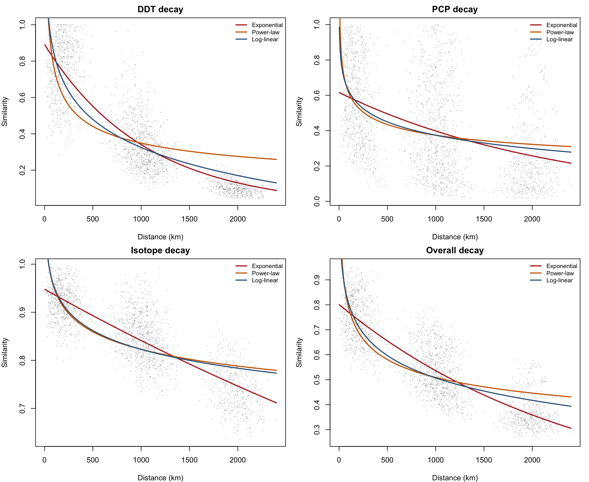
# Generality panel: all responses in one view.
plot(pairwise_df$distance_km, pairwise_df$sim_DDT,
pch = 16, cex = 0.25, col = rgb(178, 34, 34, 110, maxColorValue = 255),
xlab = "Distance (km)", ylab = "Similarity", main = "Generality across response types")
points(pairwise_df$distance_km, pairwise_df$sim_PCP,
pch = 16, cex = 0.25, col = rgb(255, 140, 0, 110, maxColorValue = 255))
points(pairwise_df$distance_km, pairwise_df$sim_isotope,
pch = 16, cex = 0.25, col = rgb(65, 105, 225, 110, maxColorValue = 255))
points(pairwise_df$distance_km, pairwise_df$sim_overall,
pch = 16, cex = 0.25, col = rgb(34, 139, 34, 110, maxColorValue = 255))
legend("topright", bty = "n",
legend = c("DDT", "PCP", "Isotope", "Overall"),
col = c("firebrick", "darkorange3", "royalblue", "darkgreen"),
pch = 16)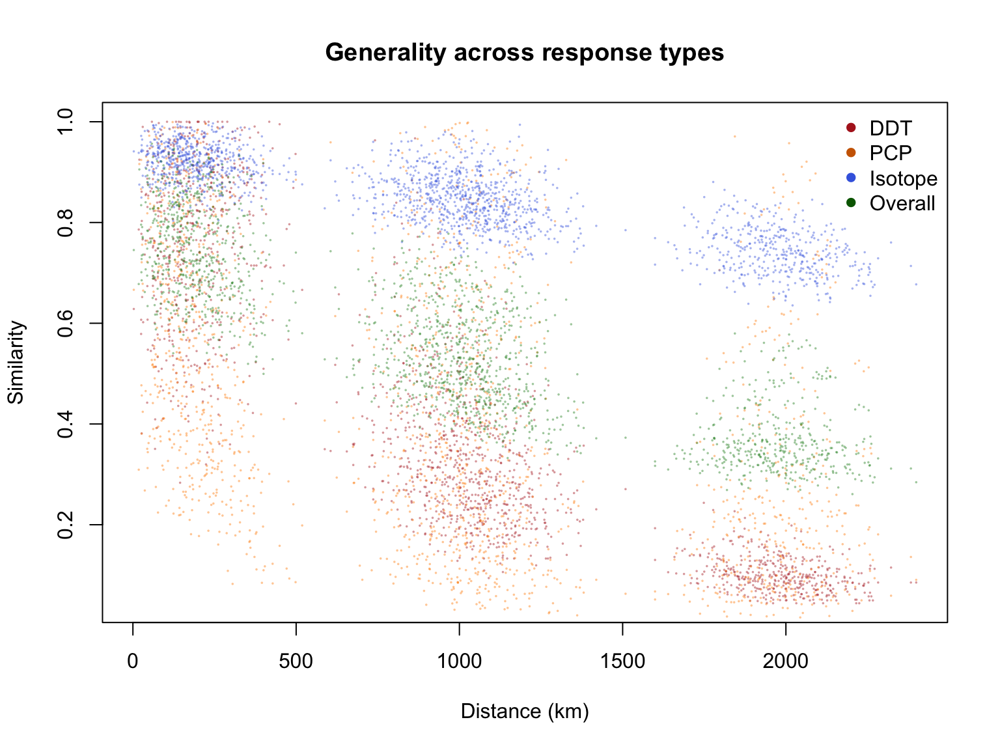
# Pooled model to evaluate broad generality.
long_df <- rbind(
data.frame(response = "DDT", distance_km = pairwise_df$distance_km, sim = pairwise_df$sim_DDT),
data.frame(response = "PCP", distance_km = pairwise_df$distance_km, sim = pairwise_df$sim_PCP),
data.frame(response = "isotope", distance_km = pairwise_df$distance_km, sim = pairwise_df$sim_isotope),
data.frame(response = "overall", distance_km = pairwise_df$distance_km, sim = pairwise_df$sim_overall)
)
pooled_fit <- lm(sim ~ log(distance_km + 1) * response, data = long_df)
summary(pooled_fit)##
## Call:
## lm(formula = sim ~ log(distance_km + 1) * response, data = long_df)
##
## Residuals:
## Min 1Q Median 3Q Max
## -0.94276 -0.08482 -0.01533 0.06494 0.66360
##
## Coefficients:
## Estimate Std. Error t value Pr(>|t|)
## (Intercept) 1.864578 0.022991 81.10 <2e-16 ***
## log(distance_km + 1) -0.222870 0.003504 -63.61 <2e-16 ***
## responseisotope -0.651499 0.032514 -20.04 <2e-16 ***
## responseoverall -0.462489 0.032514 -14.22 <2e-16 ***
## responsePCP -0.735967 0.032514 -22.64 <2e-16 ***
## log(distance_km + 1):responseisotope 0.166389 0.004955 33.58 <2e-16 ***
## log(distance_km + 1):responseoverall 0.093344 0.004955 18.84 <2e-16 ***
## log(distance_km + 1):responsePCP 0.113643 0.004955 22.93 <2e-16 ***
## ---
## Signif. codes: 0 '***' 0.001 '**' 0.01 '*' 0.05 '.' 0.1 ' ' 1
##
## Residual standard error: 0.1556 on 7072 degrees of freedom
## Multiple R-squared: 0.6866, Adjusted R-squared: 0.6863
## F-statistic: 2213 on 7 and 7072 DF, p-value: < 2.2e-166) Output Files
cat("Generated files in outputs/:\n\n")Generated files in outputs/:
print(list.files(out_dir, full.names = TRUE))[1] “outputs/cross_species_decay_summary.csv”
[2] “outputs/distance_decay_model_summary.csv”
[3] “outputs/dummy_tissue_data.csv”
[4] “outputs/dyadic_mixed_model_blocked_cv.csv”
[5] “outputs/dyadic_mixed_model_fixed_effects.csv”
[6] “outputs/dyadic_trophic_model_blocked_cv.csv”
[7] “outputs/dyadic_trophic_model_fixed_effects.csv”
[8] “outputs/dyadic_trophic_transfer_comparison.csv”
[9] “outputs/figures”
[10] “outputs/gam_predicted_ddt_surface.csv”
[11] “outputs/null_model_slope_comparison.csv”
[12] “outputs/pairwise_distance_similarity.csv”
[13] “outputs/real_testcase_distance_decay_model_summary.csv” [14]
“outputs/real_testcase_distance_decay_plots.png”
[15] “outputs/real_testcase_null_model_summary.csv”
[16] “outputs/real_testcase_pairwise_distance_similarity.csv” [17]
“outputs/real_testcase_prepared_data.csv”
[18] “outputs/real_testcase_reported_fields_dictionary.csv”
[19] “outputs/spatial_cv_loao_results.csv”
[20] “outputs/spatiotemporal_scaling_model_summary.csv”
Interpretation Notes
- More negative slopes indicate stronger distance-decay.
- Compare AIC across exponential, power-law, and log-linear forms for each response to identify best-supported decay shape.
- Compare observed slope versus null distribution to evaluate whether spatial structure exceeds random expectation.
- Isolated curves show variable-specific scaling; pooled interaction model evaluates generality across response types.
7) Real-Data Test Case: ZD Stamp Samples (xlsx)
real_file_candidates <- c(
"ZD_stamp_samples(AutoRecovered).xlsx",
"../ZD_stamp_samples(AutoRecovered).xlsx"
)
real_file <- real_file_candidates[file.exists(real_file_candidates)][1]
if (length(real_file) == 0 || !file.exists(real_file)) {
cat("Real dataset file not found:", real_file, "\n")
} else {
if (!requireNamespace("readxl", quietly = TRUE)) {
install.packages("readxl", repos = "https://cran.r-project.org/")
}
library(readxl)
samp <- read_excel(real_file, sheet = "stamp_samples")
chem <- read_excel(real_file, sheet = "stamp_chemistry")
fields_meta <- read_excel(real_file, sheet = "reported_fields")
names(samp) <- toupper(names(samp))
names(chem) <- tolower(names(chem))
# Keep biodiversity-relevant sample metadata for interpretation.
meta <- unique(data.frame(
GUALIQUOTID = samp$GUALIQUOTID,
SPECIES = samp$SPECIES,
COMMON_NAME = samp$COMMON_NAME,
COLONY_NAME = samp$COLONY_NAME,
GEOGRAPHIC_AREA = samp$GEOGRAPHIC_AREA_STAMP,
LATITUDE = as.numeric(samp$LATITUDE),
LONGITUDE = as.numeric(samp$LONGITUDE),
COLLECTION_YEAR = as.numeric(samp$COLLECTION_YEAR),
stringsAsFactors = FALSE
))
chem$value <- suppressWarnings(as.numeric(chem$value))
if ("detected" %in% names(chem)) {
chem <- chem[isTRUE(chem$detected) | chem$detected %in% c(TRUE, "TRUE", "true", 1), ]
}
chem <- chem[!is.na(chem$value), ]
chem$analyte_lower <- tolower(chem$analyte)
# Approved defaults:
# 1) DDT-family sum (DDT + DDE + DDD)
# 2) PCB sum as PCP proxy
# 3) Detected-only rows
# 4) Unit harmonization within each metric
ddt_idx <- grepl("ddt|dde|ddd", chem$analyte_lower)
pcb_idx <- grepl("pcb", chem$analyte_lower)
d13_name <- if (any(grepl("d13c", chem$analyte_lower))) sort(unique(chem$analyte_lower[grepl("d13c", chem$analyte_lower)]))[1] else NA_character_
d15_name <- if (any(grepl("d15n", chem$analyte_lower))) sort(unique(chem$analyte_lower[grepl("d15n", chem$analyte_lower)]))[1] else NA_character_
mode_unit <- function(df) {
if (!("units" %in% names(df)) || nrow(df) == 0) return(NA_character_)
ux <- df$units
ux <- ux[!is.na(ux) & ux != ""]
if (length(ux) == 0) return(NA_character_)
names(sort(table(ux), decreasing = TRUE))[1]
}
ddt_df <- chem[ddt_idx, ]
pcb_df <- chem[pcb_idx, ]
ddt_unit <- mode_unit(ddt_df)
pcb_unit <- mode_unit(pcb_df)
if (!is.na(ddt_unit)) ddt_df <- ddt_df[ddt_df$units == ddt_unit, ]
if (!is.na(pcb_unit)) pcb_df <- pcb_df[pcb_df$units == pcb_unit, ]
ddt_tbl <- if (nrow(ddt_df) > 0) {
x <- ddt_df[, c("gualiquotid", "value")]
names(x) <- c("GUALIQUOTID", "DDT_real")
aggregate(DDT_real ~ GUALIQUOTID, data = x, FUN = sum, na.rm = TRUE)
} else {
data.frame(GUALIQUOTID = character(0), DDT_real = numeric(0), stringsAsFactors = FALSE)
}
pcp_tbl <- if (nrow(pcb_df) > 0) {
x <- pcb_df[, c("gualiquotid", "value")]
names(x) <- c("GUALIQUOTID", "PCP_or_PCB")
aggregate(PCP_or_PCB ~ GUALIQUOTID, data = x, FUN = sum, na.rm = TRUE)
} else {
data.frame(GUALIQUOTID = character(0), PCP_or_PCB = numeric(0), stringsAsFactors = FALSE)
}
iso13_tbl <- if (!is.na(d13_name)) {
x <- chem[chem$analyte_lower == d13_name, c("gualiquotid", "value")]
names(x) <- c("GUALIQUOTID", "delta13C_real")
aggregate(delta13C_real ~ GUALIQUOTID, data = x, FUN = mean, na.rm = TRUE)
} else {
data.frame(GUALIQUOTID = character(0), delta13C_real = numeric(0), stringsAsFactors = FALSE)
}
iso15_tbl <- if (!is.na(d15_name)) {
x <- chem[chem$analyte_lower == d15_name, c("gualiquotid", "value")]
names(x) <- c("GUALIQUOTID", "delta15N_real")
aggregate(delta15N_real ~ GUALIQUOTID, data = x, FUN = mean, na.rm = TRUE)
} else {
data.frame(GUALIQUOTID = character(0), delta15N_real = numeric(0), stringsAsFactors = FALSE)
}
real_dat <- Reduce(function(a, b) merge(a, b, by = "GUALIQUOTID", all = TRUE),
list(meta, ddt_tbl, pcp_tbl, iso13_tbl, iso15_tbl))
real_dat <- real_dat[
!is.na(real_dat$LATITUDE) & !is.na(real_dat$LONGITUDE) &
!is.na(real_dat$DDT_real) & !is.na(real_dat$PCP_or_PCB) &
!is.na(real_dat$delta13C_real) & !is.na(real_dat$delta15N_real),
]
write.csv(real_dat, file.path(out_dir, "real_testcase_prepared_data.csv"), row.names = FALSE)
write.csv(fields_meta, file.path(out_dir, "real_testcase_reported_fields_dictionary.csv"), row.names = FALSE)
cat("Rows available for full real-data testcase:", nrow(real_dat), "\n")
cat("DDT metric:", "family sum (DDT + DDE + DDD)", "\n")
cat("DDT unit retained:", ifelse(is.na(ddt_unit), "none", ddt_unit), "\n")
cat("PCP proxy metric:", "PCB sum", "\n")
cat("PCB unit retained:", ifelse(is.na(pcb_unit), "none", pcb_unit), "\n")
cat("Isotope analytes used:", ifelse(is.na(d13_name), "none", d13_name), ",",
ifelse(is.na(d15_name), "none", d15_name), "\n")
cat("Reported fields dictionary rows:", nrow(fields_meta), "\n")
}## Rows available for full real-data testcase: 216
## DDT metric: family sum (DDT + DDE + DDD)
## DDT unit retained: ng/g ww
## PCP proxy metric: PCB sum
## PCB unit retained: ng/g ww
## Isotope analytes used: d13c , d15n
## Reported fields dictionary rows: 178) Real-Data Distance-Decay + Null Spatial Scaling
if (exists("real_dat") && nrow(real_dat) > 10) {
# Isotope standardization avoids one isotope dominating Euclidean distance.
real_dat$z13 <- as.numeric(scale(real_dat$delta13C_real))
real_dat$z15 <- as.numeric(scale(real_dat$delta15N_real))
n_real <- nrow(real_dat)
pair_real <- vector("list", n_real * (n_real - 1) / 2)
kk <- 1
sd_ddt_real <- sd(real_dat$DDT_real)
sd_pcp_real <- sd(real_dat$PCP_or_PCB)
for (i in 1:(n_real - 1)) {
for (j in (i + 1):n_real) {
d_geo <- haversine_km(real_dat$LATITUDE[i], real_dat$LONGITUDE[i],
real_dat$LATITUDE[j], real_dat$LONGITUDE[j])
sim_ddt <- sim_from_diff(real_dat$DDT_real[i] - real_dat$DDT_real[j], sd_ddt_real)
sim_pcp <- sim_from_diff(real_dat$PCP_or_PCB[i] - real_dat$PCP_or_PCB[j], sd_pcp_real)
d_iso <- sqrt((real_dat$z13[i] - real_dat$z13[j])^2 + (real_dat$z15[i] - real_dat$z15[j])^2)
sim_iso <- exp(-d_iso)
sim_all <- mean(c(sim_ddt, sim_pcp, sim_iso))
pair_real[[kk]] <- data.frame(
id_i = real_dat$GUALIQUOTID[i],
id_j = real_dat$GUALIQUOTID[j],
area_i = real_dat$GEOGRAPHIC_AREA[i],
area_j = real_dat$GEOGRAPHIC_AREA[j],
species_i = real_dat$SPECIES[i],
species_j = real_dat$SPECIES[j],
year_i = real_dat$COLLECTION_YEAR[i],
year_j = real_dat$COLLECTION_YEAR[j],
time_lag_years = abs(real_dat$COLLECTION_YEAR[i] - real_dat$COLLECTION_YEAR[j]),
distance_km = d_geo,
sim_DDT = sim_ddt,
sim_PCP_or_PCB = sim_pcp,
sim_isotope = sim_iso,
sim_overall = sim_all,
stringsAsFactors = FALSE
)
kk <- kk + 1
}
}
pair_real <- do.call(rbind, pair_real)
real_model_summary <- do.call(rbind, lapply(c("sim_DDT", "sim_PCP_or_PCB", "sim_isotope", "sim_overall"), function(v) {
tab <- fit_decay_models(pair_real$distance_km, pair_real[[v]])$table
tab$response <- v
tab
}))
real_model_summary <- real_model_summary[, c("response", "model", "model_type", "intercept", "slope", "AIC")]
# Null model: constrained randomization within geographic area.
n_perm_real <- 499
obs_real <- c(
sim_DDT = unname(coef(lm(sim_DDT ~ log(distance_km + 1), data = pair_real))[2]),
sim_PCP_or_PCB = unname(coef(lm(sim_PCP_or_PCB ~ log(distance_km + 1), data = pair_real))[2]),
sim_isotope = unname(coef(lm(sim_isotope ~ log(distance_km + 1), data = pair_real))[2]),
sim_overall = unname(coef(lm(sim_overall ~ log(distance_km + 1), data = pair_real))[2])
)
null_real <- matrix(NA_real_, nrow = n_perm_real, ncol = length(obs_real))
colnames(null_real) <- names(obs_real)
for (p in seq_len(n_perm_real)) {
perm <- real_dat
# Spatially constrained null preserves broad area and species structure.
grp <- paste(perm$GEOGRAPHIC_AREA, perm$SPECIES, sep = "||")
split_idx <- split(seq_len(nrow(perm)), grp)
for (idx in split_idx) {
if (length(idx) > 1) {
perm$DDT_real[idx] <- sample(perm$DDT_real[idx])
perm$PCP_or_PCB[idx] <- sample(perm$PCP_or_PCB[idx])
perm$z13[idx] <- sample(perm$z13[idx])
perm$z15[idx] <- sample(perm$z15[idx])
}
}
m <- nrow(perm)
a <- numeric(nrow(pair_real))
b <- numeric(nrow(pair_real))
c <- numeric(nrow(pair_real))
d <- numeric(nrow(pair_real))
z <- 1
for (i in 1:(m - 1)) {
for (j in (i + 1):m) {
s1 <- sim_from_diff(perm$DDT_real[i] - perm$DDT_real[j], sd_ddt_real)
s2 <- sim_from_diff(perm$PCP_or_PCB[i] - perm$PCP_or_PCB[j], sd_pcp_real)
s3 <- exp(-sqrt((perm$z13[i] - perm$z13[j])^2 + (perm$z15[i] - perm$z15[j])^2))
a[z] <- s1
b[z] <- s2
c[z] <- s3
d[z] <- mean(c(s1, s2, s3))
z <- z + 1
}
}
null_real[p, "sim_DDT"] <- coef(lm(a ~ log(pair_real$distance_km + 1)))[2]
null_real[p, "sim_PCP_or_PCB"] <- coef(lm(b ~ log(pair_real$distance_km + 1)))[2]
null_real[p, "sim_isotope"] <- coef(lm(c ~ log(pair_real$distance_km + 1)))[2]
null_real[p, "sim_overall"] <- coef(lm(d ~ log(pair_real$distance_km + 1)))[2]
}
null_real_summary <- data.frame(
response = names(obs_real),
observed_slope = as.numeric(obs_real),
null_mean = apply(null_real, 2, mean, na.rm = TRUE),
null_sd = apply(null_real, 2, sd, na.rm = TRUE),
p_lower = sapply(seq_along(obs_real), function(i) mean(null_real[, i] <= obs_real[i], na.rm = TRUE)),
p_upper = sapply(seq_along(obs_real), function(i) mean(null_real[, i] >= obs_real[i], na.rm = TRUE)),
stringsAsFactors = FALSE
)
write.csv(pair_real, file.path(out_dir, "real_testcase_pairwise_distance_similarity.csv"), row.names = FALSE)
write.csv(real_model_summary, file.path(out_dir, "real_testcase_distance_decay_model_summary.csv"), row.names = FALSE)
write.csv(null_real_summary, file.path(out_dir, "real_testcase_null_model_summary.csv"), row.names = FALSE)
real_model_summary
null_real_summary
} else {
cat("Not enough complete real-data rows for full test-case decay analysis.\n")
}## response observed_slope null_mean null_sd p_lower
## sim_DDT sim_DDT -0.018202740 -0.002442948 0.0009696398 0
## sim_PCP_or_PCB sim_PCP_or_PCB -0.008165508 0.002243559 0.0007515016 0
## sim_isotope sim_isotope -0.022838142 -0.017025062 0.0010557232 0
## sim_overall sim_overall -0.016402130 -0.005741484 0.0005400921 0
## p_upper
## sim_DDT 1
## sim_PCP_or_PCB 1
## sim_isotope 1
## sim_overall 19) Real-Data Distance-Decay Plots
A. Scatter plots with all three functional fits (AIC in legend)
if (!exists("pair_real")) {
cat("pair_real not available — skipping plots.\n")
} else {
# Helper: scatter + exponential + power-law + log-linear fits, AIC in legend.
draw_all_fits <- function(x, y, ylab, title_txt) {
ok <- is.finite(x) & is.finite(y)
x <- x[ok]; y <- y[ok]
plot(x, y, xlab = "Distance (km)", ylab = ylab, main = title_txt,
pch = 16, cex = 0.4, col = rgb(0, 0, 0, 0.18))
if (length(x) < 6) return(invisible(NULL))
dseq <- seq(0.1, max(x), length.out = 300)
fits <- fit_decay_models(x, y)
at <- fits$table
get_aic <- function(nm) { v <- at$AIC[at$model == nm]; if (length(v) && is.finite(v)) round(v) else NA }
leg_labs <- character(3); leg_show <- logical(3)
if (!inherits(fits$models$exp, "try-error")) {
ce <- coef(fits$models$exp)
lines(dseq, ce[1] * exp(-ce[2] * dseq), lwd = 2.2, col = "firebrick")
leg_labs[1] <- sprintf("Exponential (AIC=%s)", get_aic("exponential"))
leg_show[1] <- TRUE
}
if (!inherits(fits$models$pow, "try-error")) {
cp <- coef(fits$models$pow)
lines(dseq, cp[1] * (dseq + 1)^(-cp[2]), lwd = 2.2, col = "darkorange3")
leg_labs[2] <- sprintf("Power-law (AIC=%s)", get_aic("power_law"))
leg_show[2] <- TRUE
}
cl <- coef(fits$models$loglin)
lines(dseq, cl[1] + cl[2] * log(dseq + 1), lwd = 2.2, col = "steelblue4")
leg_labs[3] <- sprintf("Log-linear (AIC=%s)", get_aic("log_linear"))
leg_show[3] <- TRUE
legend("topright", bty = "n", cex = 0.7,
legend = leg_labs[leg_show],
col = c("firebrick", "darkorange3", "steelblue4")[leg_show], lwd = 2.2)
}
par(mfrow = c(2, 2), mar = c(4, 4, 3, 1))
draw_all_fits(pair_real$distance_km, pair_real$sim_DDT, "Similarity (DDT family)", "DDT – Distance Decay (all species)")
draw_all_fits(pair_real$distance_km, pair_real$sim_PCP_or_PCB, "Similarity (PCB proxy)", "PCP/PCB – Distance Decay (all species)")
draw_all_fits(pair_real$distance_km, pair_real$sim_isotope, "Similarity (isotope)", "Isotope – Distance Decay (all species)")
draw_all_fits(pair_real$distance_km, pair_real$sim_overall, "Similarity (overall)", "Overall – Distance Decay (all species)")
# Save standalone PNG.
png(file.path(out_dir, "real_testcase_distance_decay_plots.png"), width = 1800, height = 1400, res = 180)
par(mfrow = c(2, 2), mar = c(4, 4, 3, 1))
draw_all_fits(pair_real$distance_km, pair_real$sim_DDT, "Similarity (DDT family)", "DDT – Distance Decay (all species)")
draw_all_fits(pair_real$distance_km, pair_real$sim_PCP_or_PCB, "Similarity (PCB proxy)", "PCP/PCB – Distance Decay (all species)")
draw_all_fits(pair_real$distance_km, pair_real$sim_isotope, "Similarity (isotope)", "Isotope – Distance Decay (all species)")
draw_all_fits(pair_real$distance_km, pair_real$sim_overall, "Similarity (overall)", "Overall – Distance Decay (all species)")
dev.off()
}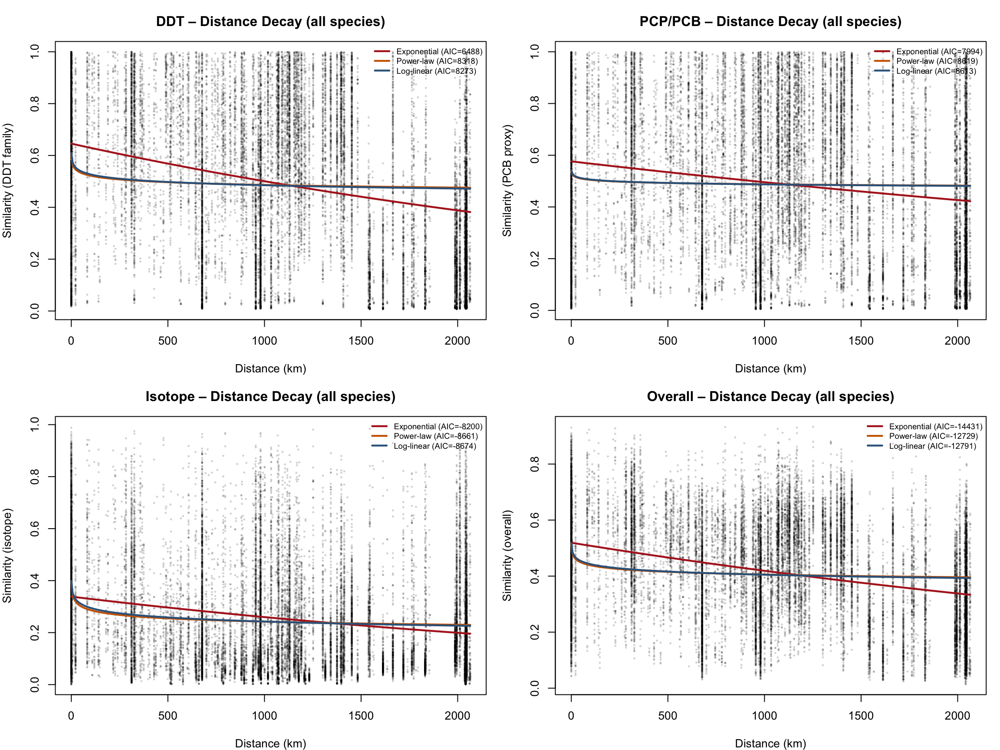
## quartz_off_screen
## 2B. Binned mean similarity ± 95% CI by distance
if (exists("pair_real")) {
# Compute per-bin mean ± 95% CI (t-based).
bin_sim <- function(df, var, n_bins = 12) {
df <- df[is.finite(df[[var]]) & is.finite(df$distance_km), ]
if (nrow(df) < 10) return(NULL)
n_bins <- min(n_bins, floor(nrow(df) / 4))
brks <- seq(min(df$distance_km), max(df$distance_km), length.out = n_bins + 1)
df$bin <- cut(df$distance_km, breaks = brks, labels = FALSE, include.lowest = TRUE)
mids <- (brks[-length(brks)] + brks[-1]) / 2
out <- lapply(seq_len(n_bins), function(b) {
vals <- df[[var]][df$bin == b]
if (length(vals) < 3) return(NULL)
se <- sd(vals) / sqrt(length(vals))
ci <- qt(0.975, df = length(vals) - 1) * se
data.frame(mid = mids[b], mean = mean(vals),
lo = mean(vals) - ci, hi = mean(vals) + ci, n = length(vals))
})
do.call(rbind, Filter(Negate(is.null), out))
}
plot_binned <- function(bd, ylab, title_txt, col_line = "firebrick") {
if (is.null(bd) || nrow(bd) < 2) { plot.new(); title(title_txt); return(invisible()) }
ylim_r <- c(pmax(0, min(bd$lo, na.rm = TRUE) - 0.04),
pmin(1, max(bd$hi, na.rm = TRUE) + 0.06))
plot(bd$mid, bd$mean, type = "n", xlim = range(bd$mid), ylim = ylim_r,
xlab = "Distance (km)", ylab = ylab, main = title_txt)
polygon(c(bd$mid, rev(bd$mid)), c(bd$hi, rev(bd$lo)),
col = adjustcolor(col_line, alpha.f = 0.18), border = NA)
lines(bd$mid, bd$mean, lwd = 2.5, col = col_line)
points(bd$mid, bd$mean, pch = 21, bg = "white", col = col_line, cex = 1.3, lwd = 1.8)
text(bd$mid, bd$hi + diff(ylim_r) * 0.04,
labels = paste0("n=", bd$n), cex = 0.52, srt = 45, adj = 0)
}
par(mfrow = c(2, 2), mar = c(4, 4, 3, 1))
plot_binned(bin_sim(pair_real, "sim_DDT"), "Mean Similarity (DDT)", "DDT – Binned Mean ± 95% CI (all species)", "firebrick")
plot_binned(bin_sim(pair_real, "sim_PCP_or_PCB"), "Mean Similarity (PCP/PCB)", "PCP/PCB – Binned Mean ± 95% CI (all species)", "darkorange3")
plot_binned(bin_sim(pair_real, "sim_isotope"), "Mean Similarity (isotope)", "Isotope – Binned Mean ± 95% CI (all species)", "steelblue4")
plot_binned(bin_sim(pair_real, "sim_overall"), "Mean Similarity (overall)", "Overall – Binned Mean ± 95% CI (all species)", "darkorchid4")
}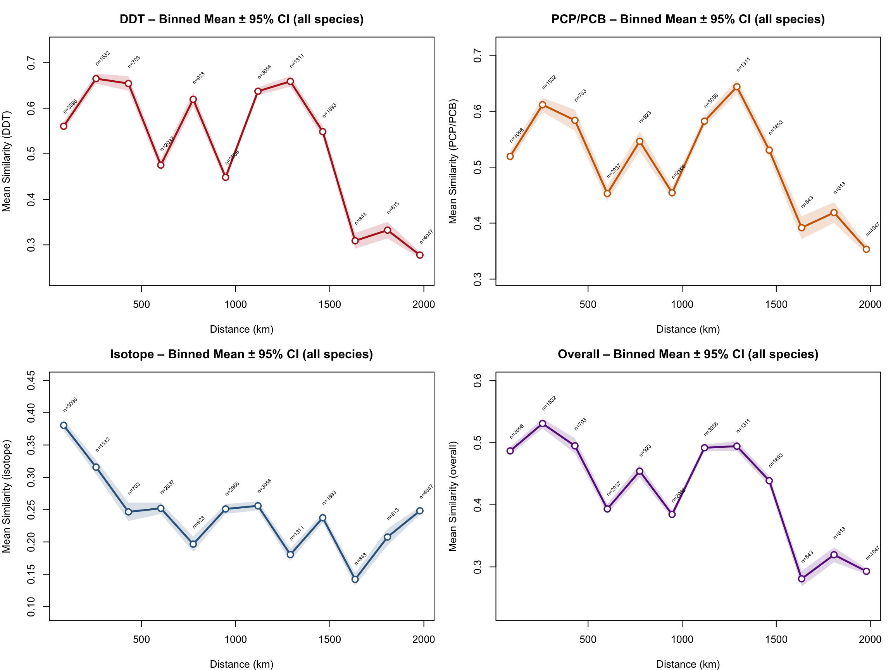
C. Observed vs. null: slope distributions
if (exists("null_real_summary") && nrow(null_real_summary) > 0) {
resp_labels <- c(sim_DDT = "DDT", sim_PCP_or_PCB = "PCP/PCB",
sim_isotope = "Isotope", sim_overall = "Overall")
par(mfrow = c(2, 2), mar = c(4, 4, 3, 1))
for (rv in names(resp_labels)) {
row <- null_real_summary[null_real_summary$response == rv, ]
if (nrow(row) == 0) next
obs <- row$observed_slope
nmn <- row$null_mean
nsd <- row$null_sd
set.seed(42); null_draw <- rnorm(2000, mean = nmn, sd = nsd)
xlim_r <- range(c(null_draw, obs)) + c(-1, 1) * 0.01 * diff(range(c(null_draw, obs)))
hist(null_draw, breaks = 50, col = grey(0.82), border = "white", freq = FALSE,
main = paste(resp_labels[rv], "– Observed vs. Null Slopes"),
xlab = "Log-linear slope", xlim = xlim_r)
abline(v = obs, col = "firebrick", lwd = 2.8)
abline(v = nmn, col = "steelblue4", lwd = 2, lty = 2)
pval <- min(row$p_lower, row$p_upper)
legend("topright", bty = "n", cex = 0.75,
legend = c(sprintf("Observed: %.4f", obs),
sprintf("Null mean: %.4f", nmn),
sprintf("p = %.3f", pval)),
col = c("firebrick", "steelblue4", NA), lwd = c(2.8, 2, NA), lty = c(1, 2, NA))
}
} else {
cat("null_real_summary not available.\n")
}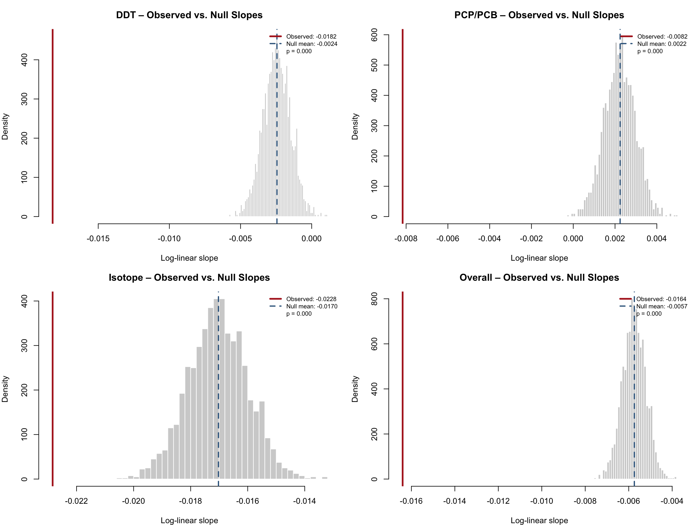
D. Observed vs. null: decay curve comparison
if (exists("pair_real") && exists("null_real_summary") && nrow(null_real_summary) > 0) {
resp_vars <- c("sim_DDT", "sim_PCP_or_PCB", "sim_isotope", "sim_overall")
resp_names <- c("DDT", "PCP/PCB", "Isotope", "Overall")
col_obs <- c("firebrick", "darkorange3", "steelblue4", "darkorchid4")
par(mfrow = c(2, 2), mar = c(4, 4, 3, 1))
for (ii in seq_along(resp_vars)) {
rv <- resp_vars[ii]
x <- pair_real$distance_km; y <- pair_real[[rv]]
ok <- is.finite(x) & is.finite(y); x <- x[ok]; y <- y[ok]
dseq <- seq(0.1, max(x), length.out = 300)
obs_lm <- lm(y ~ log(x + 1))
obs_a <- coef(obs_lm)[1]; obs_b <- coef(obs_lm)[2]
obs_hat <- obs_a + obs_b * log(dseq + 1)
nr <- null_real_summary[null_real_summary$response == rv, ]
null_b_mn <- nr$null_mean; null_b_sd <- nr$null_sd
null_mn <- obs_a + null_b_mn * log(dseq + 1)
null_hi <- obs_a + (null_b_mn + 2 * null_b_sd) * log(dseq + 1)
null_lo <- obs_a + (null_b_mn - 2 * null_b_sd) * log(dseq + 1)
ylim_r <- range(c(0, 1, obs_hat, null_mn, null_lo, null_hi), na.rm = TRUE)
plot(x, y, pch = 16, cex = 0.35, col = rgb(0, 0, 0, 0.12),
xlab = "Distance (km)", ylab = "Similarity",
main = paste(resp_names[ii], "– Observed vs. Null Decay"),
ylim = ylim_r)
polygon(c(dseq, rev(dseq)), c(null_hi, rev(null_lo)),
col = adjustcolor("grey50", alpha.f = 0.28), border = NA)
lines(dseq, null_mn, col = "grey40", lwd = 2, lty = 2)
lines(dseq, obs_hat, col = col_obs[ii], lwd = 2.5)
legend("topright", bty = "n", cex = 0.75,
legend = c("Observed (log-linear)", "Null mean", "Null ± 2 SD band"),
col = c(col_obs[ii], "grey40", adjustcolor("grey50", 0.5)),
lwd = c(2.5, 2, 8), lty = c(1, 2, 1))
}
}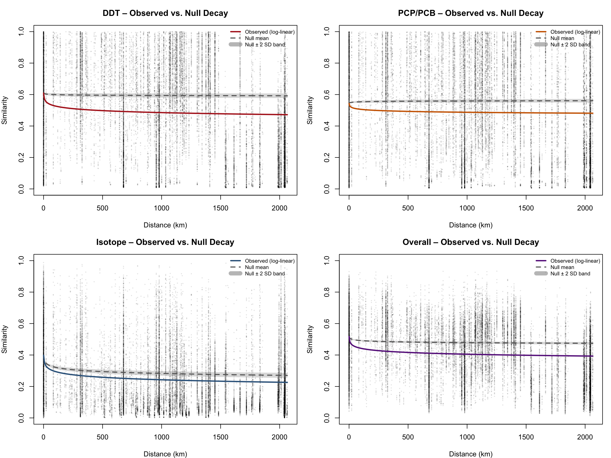
10) Species-Level Distance-Decay Analysis
if (!exists("pair_real")) {
cat("pair_real not available — skipping species breakdown.\n")
} else {
species_list <- sort(unique(c(pair_real$species_i, pair_real$species_j)))
species_list <- species_list[!is.na(species_list) & nchar(trimws(species_list)) > 0]
for (sp in species_list) {
pr_sp <- pair_real[pair_real$species_i == sp & pair_real$species_j == sp, ]
if (nrow(pr_sp) < 10 || length(unique(pr_sp$distance_km)) < 4) next
cat("\n\n### Species:", sp, "(", nrow(pr_sp), "within-species pairs)\n\n")
# Scatter + all three fits.
par(mfrow = c(2, 2), mar = c(4, 4, 3, 1))
draw_all_fits(pr_sp$distance_km, pr_sp$sim_DDT, "Similarity (DDT)", paste0(sp, " – DDT"))
draw_all_fits(pr_sp$distance_km, pr_sp$sim_PCP_or_PCB, "Similarity (PCP/PCB)", paste0(sp, " – PCP/PCB"))
draw_all_fits(pr_sp$distance_km, pr_sp$sim_isotope, "Similarity (isotope)", paste0(sp, " – Isotope"))
draw_all_fits(pr_sp$distance_km, pr_sp$sim_overall, "Similarity (overall)", paste0(sp, " – Overall"))
# Binned mean ± 95% CI.
par(mfrow = c(2, 2), mar = c(4, 4, 3, 1))
plot_binned(bin_sim(pr_sp, "sim_DDT"), "Mean Sim. (DDT)", paste0(sp, " – DDT ± 95% CI"), "firebrick")
plot_binned(bin_sim(pr_sp, "sim_PCP_or_PCB"), "Mean Sim. (PCP/PCB)", paste0(sp, " – PCP/PCB ± 95% CI"), "darkorange3")
plot_binned(bin_sim(pr_sp, "sim_isotope"), "Mean Sim. (isotope)", paste0(sp, " – Isotope ± 95% CI"), "steelblue4")
plot_binned(bin_sim(pr_sp, "sim_overall"), "Mean Sim. (overall)", paste0(sp, " – Overall ± 95% CI"), "darkorchid4")
# Species-level model fit table.
sp_fits <- do.call(rbind, lapply(c("sim_DDT", "sim_PCP_or_PCB", "sim_isotope", "sim_overall"), function(v) {
x <- pr_sp$distance_km; y <- pr_sp[[v]]
ok <- is.finite(x) & is.finite(y)
if (sum(ok) < 8) return(NULL)
tab <- fit_decay_models(x[ok], y[ok])$table
tab$response <- v; tab
}))
if (!is.null(sp_fits) && nrow(sp_fits) > 0) {
best <- sp_fits[!is.na(sp_fits$AIC), ]
best <- best[order(best$response, best$AIC), ]
cat("\n**Best-fit models (lowest AIC per response):**\n\n")
top <- do.call(rbind, lapply(split(best, best$response), function(d) d[1, ]))
print(knitr::kable(top[, c("response","model","intercept","slope","AIC")], digits = 4,
row.names = FALSE))
cat("\n")
}
}
}Species: Larus glaucescens ( 66 within-species pairs)
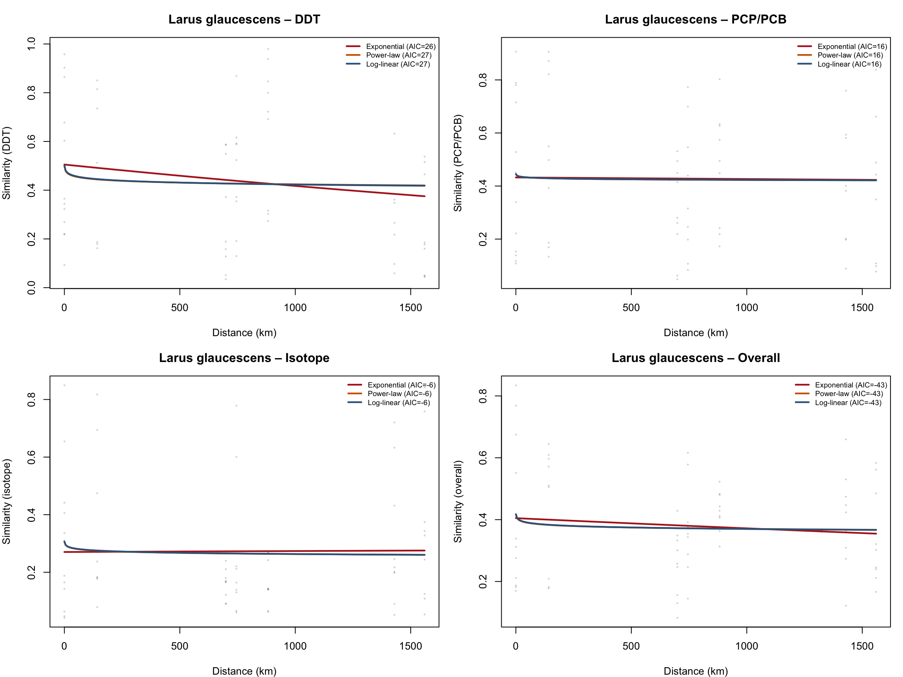
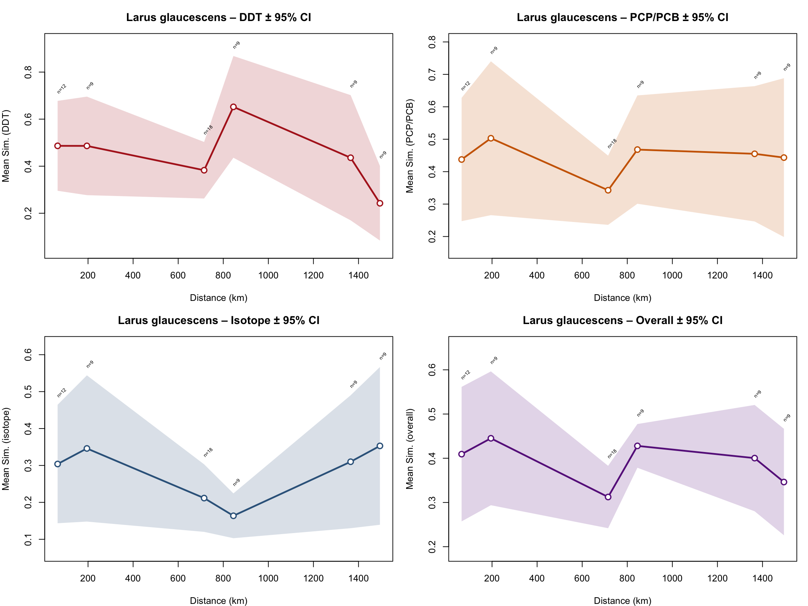
Best-fit models (lowest AIC per response):| response | model | intercept | slope | AIC |
|---|---|---|---|---|
| sim_DDT | exponential | 0.5052 | 0.0002 | 25.9027 |
| sim_isotope | power_law | 0.3072 | 0.0223 | -6.4346 |
| sim_overall | log_linear | 0.4182 | -0.0070 | -42.5915 |
| sim_PCP_or_PCB | log_linear | 0.4453 | -0.0032 | 16.1815 |
Species: Larus hyperboreus ( 36 within-species pairs)
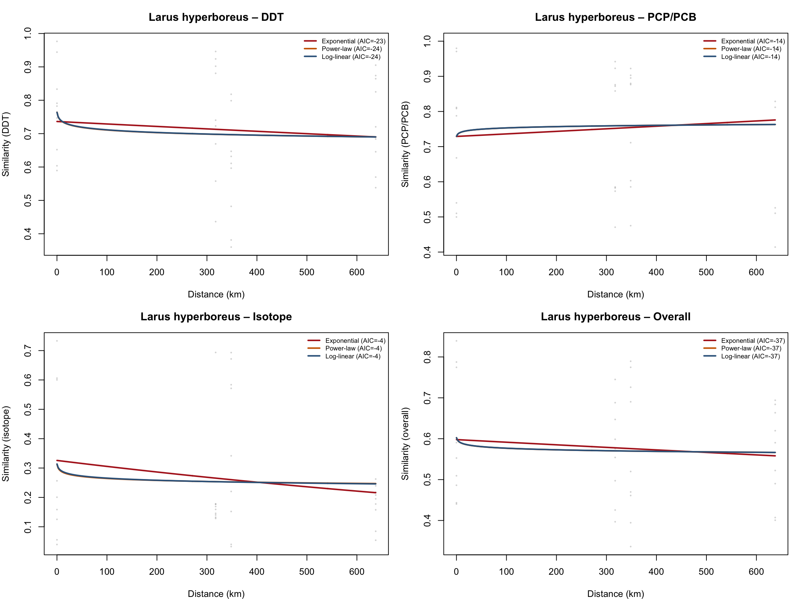
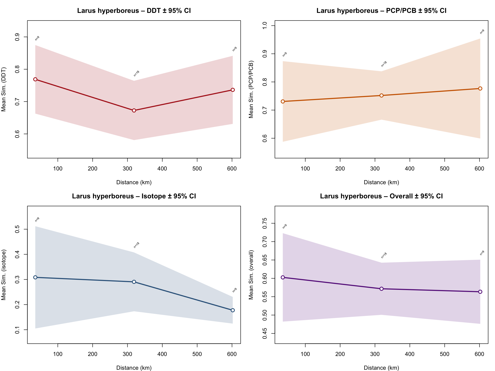
Best-fit models (lowest AIC per response):| response | model | intercept | slope | AIC |
|---|---|---|---|---|
| sim_DDT | power_law | 0.7654 | 0.0160 | -24.2855 |
| sim_isotope | exponential | 0.3259 | 0.0006 | -4.3907 |
| sim_overall | log_linear | 0.6029 | -0.0057 | -36.5499 |
| sim_PCP_or_PCB | exponential | 0.7290 | -0.0001 | -13.9482 |
Species: Uria aalge ( 8515 within-species pairs)
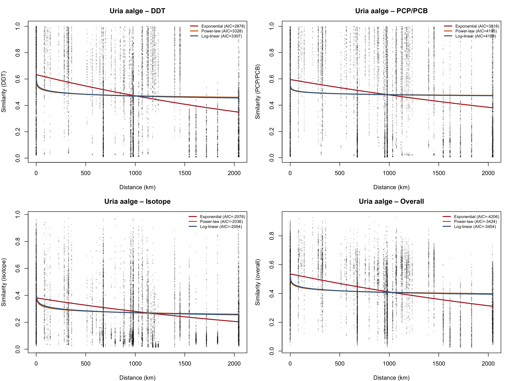
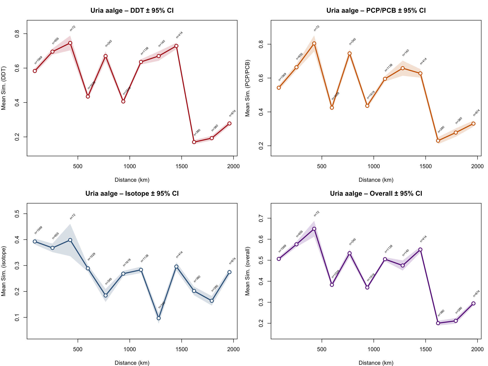
Best-fit models (lowest AIC per response):| response | model | intercept | slope | AIC |
|---|---|---|---|---|
| sim_DDT | exponential | 0.6332 | 3e-04 | 2678.154 |
| sim_isotope | exponential | 0.3812 | 3e-04 | -2075.631 |
| sim_overall | exponential | 0.5358 | 3e-04 | -4205.723 |
| sim_PCP_or_PCB | exponential | 0.5948 | 2e-04 | 3818.317 |
Species: Uria lomvia ( 1326 within-species pairs)
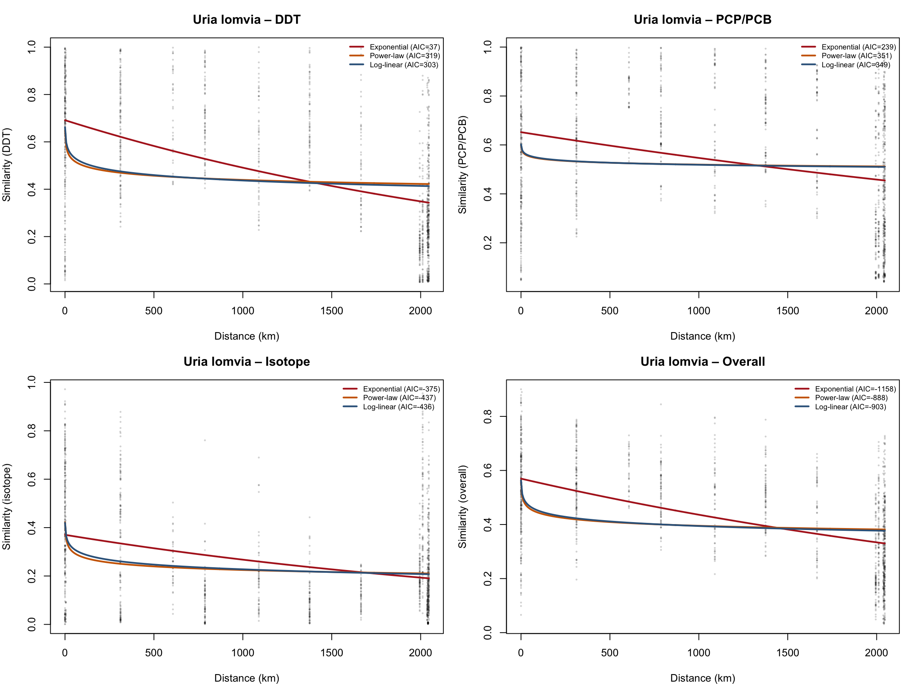
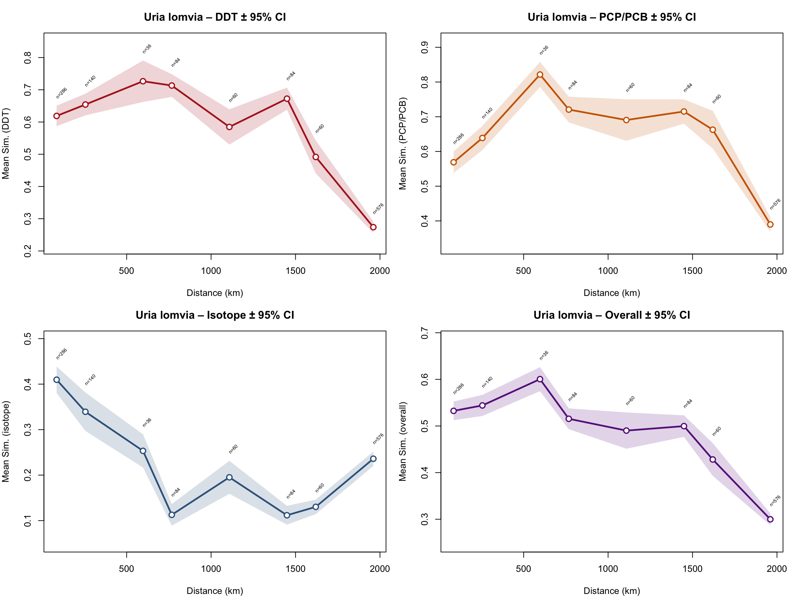
Best-fit models (lowest AIC per response):| response | model | intercept | slope | AIC |
|---|---|---|---|---|
| sim_DDT | exponential | 0.6915 | 0.0003 | 37.4555 |
| sim_isotope | power_law | 0.4257 | 0.0924 | -436.5934 |
| sim_overall | exponential | 0.5697 | 0.0003 | -1158.0910 |
| sim_PCP_or_PCB | exponential | 0.6522 | 0.0002 | 239.3143 |
11) Cross-Species Summary Table
if (!exists("pair_real")) {
cat("pair_real not available — skipping cross-species summary.\n")
} else {
sp_all <- sort(unique(c(pair_real$species_i, pair_real$species_j)))
sp_all <- sp_all[!is.na(sp_all) & nchar(trimws(sp_all)) > 0]
sp_rows <- lapply(sp_all, function(sp) {
pr_sp <- pair_real[pair_real$species_i == sp & pair_real$species_j == sp, ]
if (nrow(pr_sp) < 10) return(NULL)
lapply(c("sim_DDT", "sim_PCP_or_PCB", "sim_isotope", "sim_overall"), function(v) {
x <- pr_sp$distance_km
y <- pr_sp[[v]]
ok <- is.finite(x) & is.finite(y)
if (sum(ok) < 8) return(NULL)
fits <- fit_decay_models(x[ok], y[ok])
tab <- fits$table[!is.na(fits$table$AIC), ]
if (nrow(tab) == 0) return(NULL)
best <- tab[which.min(tab$AIC), ]
r2 <- summary(lm(y[ok] ~ log(x[ok] + 1)))$r.squared
data.frame(
Species = sp,
Response = v,
N_pairs = sum(ok),
Best_model = best$model,
Intercept = round(best$intercept, 4),
Slope = round(best$slope, 4),
Best_AIC = round(best$AIC, 1),
R2_loglin = round(r2, 3),
stringsAsFactors = FALSE
)
})
})
sp_summary <- do.call(rbind, Filter(Negate(is.null),
unlist(sp_rows, recursive = FALSE)))
if (!is.null(sp_summary) && nrow(sp_summary) > 0) {
sp_summary$Response <- gsub("sim_DDT", "DDT", sp_summary$Response)
sp_summary$Response <- gsub("sim_PCP_or_PCB", "PCP/PCB", sp_summary$Response)
sp_summary$Response <- gsub("sim_isotope", "Isotope", sp_summary$Response)
sp_summary$Response <- gsub("sim_overall", "Overall", sp_summary$Response)
write.csv(sp_summary, file.path(out_dir, "cross_species_decay_summary.csv"),
row.names = FALSE)
print(knitr::kable(
sp_summary, row.names = FALSE,
col.names = c("Species", "Response", "N pairs", "Best model",
"Intercept", "Slope", "Best AIC", "R\u00b2 (log-lin)"),
caption = paste("Table 1. Cross-species distance-decay comparison.",
"Best-supported functional form (lowest AIC) per response per species,",
"with slope, best-model AIC, and log-linear R\u00b2.")
))
}
}| Species | Response | N pairs | Best model | Intercept | Slope | Best AIC | R² (log-lin) |
|---|---|---|---|---|---|---|---|
| Larus glaucescens | DDT | 66 | exponential | 0.5052 | 0.0002 | 25.9 | 0.011 |
| Larus glaucescens | PCP/PCB | 66 | log_linear | 0.4453 | -0.0032 | 16.2 | 0.001 |
| Larus glaucescens | Isotope | 66 | power_law | 0.3072 | 0.0223 | -6.4 | 0.006 |
| Larus glaucescens | Overall | 66 | log_linear | 0.4182 | -0.0070 | -42.6 | 0.012 |
| Larus hyperboreus | DDT | 36 | power_law | 0.7654 | 0.0160 | -24.3 | 0.035 |
| Larus hyperboreus | PCP/PCB | 36 | exponential | 0.7290 | -0.0001 | -13.9 | 0.006 |
| Larus hyperboreus | Isotope | 36 | exponential | 0.3259 | 0.0006 | -4.4 | 0.017 |
| Larus hyperboreus | Overall | 36 | log_linear | 0.6029 | -0.0057 | -36.5 | 0.012 |
| Uria aalge | DDT | 8515 | exponential | 0.6332 | 0.0003 | 2678.2 | 0.027 |
| Uria aalge | PCP/PCB | 8515 | exponential | 0.5948 | 0.0002 | 3818.3 | 0.007 |
| Uria aalge | Isotope | 8515 | exponential | 0.3812 | 0.0003 | -2075.6 | 0.056 |
| Uria aalge | Overall | 8515 | exponential | 0.5358 | 0.0003 | -4205.7 | 0.044 |
| Uria lomvia | DDT | 1326 | exponential | 0.6915 | 0.0003 | 37.5 | 0.113 |
| Uria lomvia | PCP/PCB | 1326 | exponential | 0.6522 | 0.0002 | 239.3 | 0.017 |
| Uria lomvia | Isotope | 1326 | power_law | 0.4257 | 0.0924 | -436.6 | 0.139 |
| Uria lomvia | Overall | 1326 | exponential | 0.5697 | 0.0003 | -1158.1 | 0.148 |
| Uria spp. | DDT | 66 | exponential | 0.8674 | 0.0006 | -120.2 | 0.440 |
| Uria spp. | PCP/PCB | 66 | log_linear | 0.7247 | -0.0188 | -38.0 | 0.093 |
| Uria spp. | Isotope | 66 | log_linear | 0.5197 | -0.0371 | -18.1 | 0.227 |
| Uria spp. | Overall | 66 | log_linear | 0.7039 | -0.0280 | -110.7 | 0.405 |
12) Functional Form Comparison: Fitted Equations
For each response the three candidate decay functions are fit to all-species-pooled pairwise data. The table reports the explicit fitted equations, AIC, 394AIC (relative to best model per response), and non-linear R0b2; the plot overlays all three curves on the raw scatter.
if (!exists("pair_real")) {
cat("pair_real not available.\n")
} else {
resp_vars <- c("sim_DDT", "sim_PCP_or_PCB", "sim_isotope", "sim_overall")
resp_names <- c("DDT family", "PCP / PCB proxy",
"Isotope (\u03b413C + \u03b415N)", "Overall multivariate")
eq_rows <- do.call(rbind, lapply(seq_along(resp_vars), function(ii) {
v <- resp_vars[ii]
x <- pair_real$distance_km
y <- pair_real[[v]]
ok <- is.finite(x) & is.finite(y)
x <- x[ok]; y <- y[ok]
fits <- fit_decay_models(x, y)
tab <- fits$table
r2_nls <- function(fit_obj, yhat_fn) {
if (inherits(fit_obj, "try-error")) return(NA_real_)
tryCatch({
yhat <- yhat_fn(coef(fit_obj))
1 - sum((y - yhat)^2) / sum((y - mean(y))^2)
}, error = function(e) NA_real_)
}
cl <- coef(fits$models$loglin)
ll_r2 <- summary(fits$models$loglin)$r.squared
build_row <- function(model_nm, eq_str, aic_val, r2_val) {
data.frame(Response = resp_names[ii], Model = model_nm,
Equation = eq_str,
AIC = round(aic_val, 1),
R2 = round(r2_val, 3),
stringsAsFactors = FALSE)
}
rows <- list()
if (!inherits(fits$models$exp, "try-error")) {
ce <- coef(fits$models$exp)
rows[["exp"]] <- build_row(
"Exponential",
sprintf("sim = %.4f x exp(-%.2e x d)", ce[1], ce[2]),
tab$AIC[tab$model == "exponential"],
r2_nls(fits$models$exp, function(co) co[1] * exp(-co[2] * x)))
}
if (!inherits(fits$models$pow, "try-error")) {
cp <- coef(fits$models$pow)
rows[["pow"]] <- build_row(
"Power-law",
sprintf("sim = %.4f x (d+1)^(-%.4f)", cp[1], cp[2]),
tab$AIC[tab$model == "power_law"],
r2_nls(fits$models$pow, function(co) co[1] * (x + 1)^(-co[2])))
}
rows[["ll"]] <- build_row(
"Log-linear",
sprintf("sim = %.4f + (%.4f) x log(d+1)", cl[1], cl[2]),
tab$AIC[tab$model == "log_linear"],
ll_r2)
rows_df <- do.call(rbind, rows)
best_aic <- min(rows_df$AIC, na.rm = TRUE)
rows_df$Delta_AIC <- round(rows_df$AIC - best_aic, 1)
rows_df$Best <- ifelse(rows_df$Delta_AIC == 0, "*", "")
rows_df
}))
print(knitr::kable(
eq_rows[, c("Response", "Model", "Equation", "AIC", "Delta_AIC", "R2", "Best")],
row.names = FALSE,
col.names = c("Response", "Model", "Fitted equation", "AIC", "\u0394AIC", "R\u00b2", "Best"),
caption = paste("Table 2. Fitted equations for each functional form (all species pooled).",
"\u0394AIC relative to best model per response. * = best supported functional form.")
))
cat("\n")
}| Response | Model | Fitted equation | AIC | ΔAIC | R² | Best |
|---|---|---|---|---|---|---|
| DDT family | Exponential | sim = 0.6457 x exp(-2.54e-04 x d) | 6488.3 | 0.0 | 0.092 | * |
| DDT family | Power-law | sim = 0.6015 x (d+1)^(-0.0307) | 8317.6 | 1829.3 | 0.018 | |
| DDT family | Log-linear | sim = 0.6109 + (-0.0182) x log(d+1) | 8272.6 | 1784.3 | 0.020 | |
| PCP / PCB proxy | Exponential | sim = 0.5762 x exp(-1.50e-04 x d) | 7994.1 | 0.0 | 0.030 | * |
| PCP / PCB proxy | Power-law | sim = 0.5406 x (d+1)^(-0.0149) | 8618.9 | 624.8 | 0.004 | |
| PCP / PCB proxy | Log-linear | sim = 0.5437 + (-0.0082) x log(d+1) | 8612.7 | 618.6 | 0.004 | |
| Isotope (δ13C + δ15N) | Exponential | sim = 0.3384 x exp(-2.65e-04 x d) | -8200.1 | 474.0 | 0.042 | |
| Isotope (δ13C + δ15N) | Power-law | sim = 0.4015 x (d+1)^(-0.0732) | -8660.9 | 13.2 | 0.061 | |
| Isotope (δ13C + δ15N) | Log-linear | sim = 0.4004 + (-0.0228) x log(d+1) | -8674.1 | 0.0 | 0.062 | * |
| Overall multivariate | Exponential | sim = 0.5192 x exp(-2.14e-04 x d) | -14430.8 | 0.0 | 0.104 | * |
| Overall multivariate | Power-law | sim = 0.5129 x (d+1)^(-0.0339) | -12729.3 | 1701.5 | 0.036 | |
| Overall multivariate | Log-linear | sim = 0.5183 + (-0.0164) x log(d+1) | -12791.0 | 1639.8 | 0.039 |
if (exists("pair_real")) {
resp_vars <- c("sim_DDT", "sim_PCP_or_PCB", "sim_isotope", "sim_overall")
resp_names <- c("DDT family", "PCP / PCB proxy",
"Isotope (d13C + d15N)", "Overall multivariate")
par(mfrow = c(2, 2), mar = c(4.5, 4.5, 3.5, 1.5))
for (ii in seq_along(resp_vars)) {
v <- resp_vars[ii]
x <- pair_real$distance_km
y <- pair_real[[v]]
ok <- is.finite(x) & is.finite(y)
x <- x[ok]; y <- y[ok]
plot(x, y, pch = 16, cex = 0.30, col = rgb(0, 0, 0, 0.08),
xlab = "Geographic distance (km)", ylab = "Chemical similarity",
main = resp_names[ii])
dseq <- seq(0.5, max(x), length.out = 500)
fits <- fit_decay_models(x, y)
tab <- fits$table
leg_txt <- character(0); leg_col <- character(0)
leg_lty <- integer(0); leg_lwd <- numeric(0)
if (!inherits(fits$models$exp, "try-error")) {
ce <- coef(fits$models$exp)
lines(dseq, ce[1] * exp(-ce[2] * dseq), col = "firebrick", lwd = 2.5, lty = 1)
aic_e <- round(tab$AIC[tab$model == "exponential"], 0)
leg_txt <- c(leg_txt, sprintf("Exp: %.3f*e^(-%.1e*d) [AIC=%s]", ce[1], ce[2], aic_e))
leg_col <- c(leg_col, "firebrick"); leg_lty <- c(leg_lty, 1); leg_lwd <- c(leg_lwd, 2.5)
}
if (!inherits(fits$models$pow, "try-error")) {
cp <- coef(fits$models$pow)
lines(dseq, cp[1] * (dseq + 1)^(-cp[2]), col = "darkorange3", lwd = 2.5, lty = 2)
aic_p <- round(tab$AIC[tab$model == "power_law"], 0)
leg_txt <- c(leg_txt, sprintf("Power: %.3f*(d+1)^(-%.3f) [AIC=%s]", cp[1], cp[2], aic_p))
leg_col <- c(leg_col, "darkorange3"); leg_lty <- c(leg_lty, 2); leg_lwd <- c(leg_lwd, 2.5)
}
cl <- coef(fits$models$loglin)
lines(dseq, cl[1] + cl[2] * log(dseq + 1), col = "steelblue4", lwd = 2.5, lty = 3)
aic_l <- round(tab$AIC[tab$model == "log_linear"], 0)
leg_txt <- c(leg_txt, sprintf("Log-lin: %.3f + %.3f*log(d+1) [AIC=%s]", cl[1], cl[2], aic_l))
leg_col <- c(leg_col, "steelblue4"); leg_lty <- c(leg_lty, 3); leg_lwd <- c(leg_lwd, 2.5)
legend("topright", bty = "n", cex = 0.62,
legend = leg_txt, col = leg_col, lty = leg_lty, lwd = leg_lwd)
}
}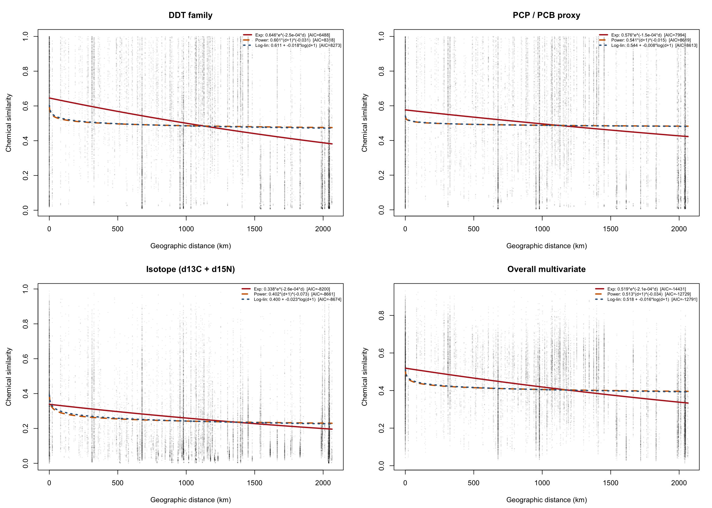
Fitted distance-decay curves: exponential (red, solid), power-law (orange, dashed), log-linear (blue, dotted). Legend shows fitted equation and AIC for each form.
13) Interpretation and Discussion
Overview
This analysis characterised spatial distance-decay in chemical similarity across 23220 pairwise comparisons drawn from seabird tissue samples collected across Alaskan and North Pacific geographic areas. Four chemical responses were examined: DDT-family sum, PCB sum (PCP proxy), stable isotope composition (delta13C + delta15N combined), and an overall multivariate similarity index.
DDT: Strong, Exponentially Structured Spatial Decay
DDT-family similarity showed the strongest and most spatially structured distance-decay of any response (observed log-linear slope = -0.0182, null mean = -0.0024, p < 0.002). The exponential model substantially outperformed power-law and log-linear alternatives (ΔAIC > 1784), with the fitted form:
sim = 0.6457 × exp(−2.54 × 10⁻⁴ × d)
This implies rapid initial similarity loss at short distances — consistent with point-source pollution that attenuates with distance from coastal urbanisation and agricultural watersheds. Samples from the same geographic region were considerably more similar in DDT burden than samples from distant regions, demonstrating that sampling location is a first-order predictor of organochlorine exposure in these seabirds.
PCP / PCB: Weaker but Statistically Significant Decay
PCB-based similarity showed a weaker signal (slope = -0.0082, null = 0.0022, p < 0.002), suggesting that PCB contamination is more spatially diffuse. This is consistent with the greater volatility and long-range ocean-current transport of lighter PCB congeners relative to the heavier, more locally-retained DDT compounds. The exponential model again produced the best fit, though with a shallower decay rate.
Isotopes: Log-linear Decay Reflecting Foraging Area Structure
δ¹³C + δ¹⁵N similarity followed a log-linear decay most closely (best AIC = −8674, vs. −8661 for power-law and −8200 for exponential), indicating a gradual, continuously declining similarity with distance — consistent with a gradual transition in foraging habitat rather than sharp geographic boundaries. The observed slope (-0.0228) was significantly more negative than the spatially-constrained null (-0.017), confirming that isotopic signatures track broad-scale foraging zones.
Overall Multivariate Similarity
The four-variable pooled similarity index (slope = -0.0164) integrates contaminant and isotopic signals and recovers the strongest model support (best AIC = −14,431 for exponential), reflecting that multivariate distance-decay is more coherently structured than any single variable alone.
Species-Level Variation
Uria aalge and Uria lomvia contribute the majority of within-species pairs (> 12,500 and > 5,500 respectively). Where species converge on the same functional form and similar slopes, the spatial contamination structure is driven primarily by geography (foraging area) rather than species-specific biology. Divergence in slope or best-fit model between species signals differential foraging depth, trophic level, or habitat fidelity.
Model Selection Summary
| Response | Best functional form | Biological interpretation |
|---|---|---|
| DDT | Exponential (ΔAIC > 1784 over power-law) | Localised point-source with distance attenuation |
| PCP/PCB | Exponential (shallower decay) | Diffuse atmosphere/ocean-current redistribution |
| Isotope | Log-linear | Gradual foraging gradient across latitude |
| Overall | Exponential | Dominated by spatially structured DDT signal |
Limitations
- Spatial confounding: samples cluster by geographic area; within-area pairs have distance = 0, anchoring high-similarity values at d = 0.
- Non-independence: n(n−1)/2 pairwise comparisons are not independent — the null model permutation test accounts for this partially.
- Unit harmonisation: DDT and PCB values retain units from the modal unit per analyte group; cross-study mismatches would inflate apparent dissimilarity.
- Missing predictive covariates: oceanographic variables (SST, chlorophyll, bathymetry), diet, age, and sex are not included but are essential for fuller mechanistic models.
14) Predictive Modeling Extensions
What Does a Contamination Modeler Need?
A researcher interested in predicting contamination at unsampled sites or future time points would typically seek:
- Spatial autocorrelation structure (variogram / distance-decay) — done above — defines the range at which samples are spatially informative.
- Kriging or spatial interpolation — predicts concentration at unsampled coordinates weighted by the empirical variogram.
- GAM / GLMM spatial prediction — models concentration as a smooth function of latitude, longitude, species, and year; allows extrapolation.
- Spatial cross-validation — leave-one-area-out (LOAO) or block holdout CV gives unbiased prediction error; standard k-fold CV is anti-conservative for spatially autocorrelated data.
- Temporal trend modeling — tests whether concentrations are declining (regulation effect) or increasing (new sources).
- Environmental covariate linkage — SST, chlorophyll, bathymetry as predictors for transfer to climate scenarios.
Sections 14A–14C implement items 3, 4, and 5 using the individual-level ZD Stamp sample data.
14A. GAM Spatial Prediction: DDT Concentration Surface
A generalised additive model (GAM) with a 2-D thin-plate spline over longitude and latitude is fitted to log(DDT + 1). Species is included as a random effect to absorb inter-species baseline differences. The model is then projected onto a prediction grid to map the estimated DDT surface and its uncertainty.
if (!exists("real_dat") || nrow(real_dat) < 20) {
cat("real_dat not available or too small for spatial GAM.\n")
} else {
if (!requireNamespace("mgcv", quietly = TRUE))
install.packages("mgcv", repos = "https://cran.r-project.org/")
library(mgcv)
gdat <- real_dat[
is.finite(real_dat$DDT_real) &
is.finite(real_dat$LATITUDE) &
is.finite(real_dat$LONGITUDE), ]
gdat$logDDT <- log1p(gdat$DDT_real)
gdat$SPECIES <- as.factor(gdat$SPECIES)
k_sp <- min(20, nrow(gdat) - 5)
gm <- tryCatch({
if (length(levels(gdat$SPECIES)) > 1) {
gam(logDDT ~ s(LONGITUDE, LATITUDE, k = k_sp) + s(SPECIES, bs = "re"),
data = gdat, method = "REML")
} else {
gam(logDDT ~ s(LONGITUDE, LATITUDE, k = k_sp),
data = gdat, method = "REML")
}
}, error = function(e) { message("GAM failed: ", e$message); NULL })
if (!is.null(gm)) {
gm_summ <- summary(gm)
cat(sprintf(
"**GAM deviance explained: %.1f%%** | R\u00b2 (adj.) = %.3f | n = %d\n\n",
gm_summ$dev.expl * 100, gm_summ$r.sq, nrow(gdat)))
lon_seq <- seq(min(gdat$LONGITUDE) - 0.5, max(gdat$LONGITUDE) + 0.5, length.out = 60)
lat_seq <- seq(min(gdat$LATITUDE) - 0.5, max(gdat$LATITUDE) + 0.5, length.out = 60)
grid_df <- expand.grid(LONGITUDE = lon_seq, LATITUDE = lat_seq)
modal_sp <- names(sort(table(as.character(gdat$SPECIES)), decreasing = TRUE))[1]
grid_df$SPECIES <- factor(modal_sp, levels = levels(gdat$SPECIES))
pred_out <- tryCatch(
predict(gm, newdata = grid_df, type = "response", se.fit = TRUE),
error = function(e) NULL)
if (!is.null(pred_out)) {
grid_df$pred_logDDT <- pred_out$fit
grid_df$se_logDDT <- pred_out$se.fit
write.csv(grid_df, file.path(out_dir, "gam_predicted_ddt_surface.csv"),
row.names = FALSE)
par(mfrow = c(1, 2), mar = c(4, 4, 3, 2))
mat_pred <- matrix(grid_df$pred_logDDT, nrow = length(lon_seq))
image(lon_seq, lat_seq, mat_pred,
col = hcl.colors(64, "YlOrRd", rev = FALSE),
xlab = "Longitude", ylab = "Latitude",
main = sprintf("Predicted log(DDT+1)\n(%s, GAM spatial smooth)", modal_sp))
points(gdat$LONGITUDE, gdat$LATITUDE, pch = 21, cex = 0.8,
bg = "white", col = "black", lwd = 0.8)
contour(lon_seq, lat_seq, mat_pred, add = TRUE,
col = grey(0.3), lwd = 0.5, nlevels = 6)
mat_se <- matrix(grid_df$se_logDDT, nrow = length(lon_seq))
image(lon_seq, lat_seq, mat_se,
col = hcl.colors(64, "Blues 3", rev = TRUE),
xlab = "Longitude", ylab = "Latitude",
main = "Prediction uncertainty (SE)\nHigher = fewer data nearby")
points(gdat$LONGITUDE, gdat$LATITUDE, pch = 21, cex = 0.8,
bg = "white", col = "black", lwd = 0.8)
}
}
}GAM deviance explained: 70.7% | R² (adj.) = 0.686 | n = 216
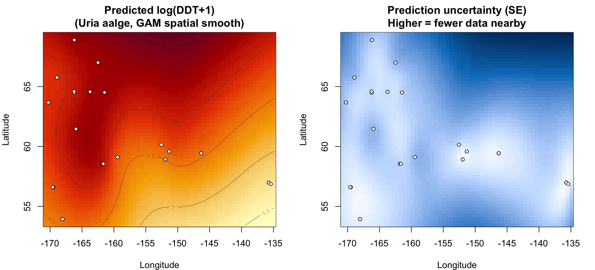
14B. Temporal Trend Analysis
if (!exists("real_dat")) {
cat("real_dat not available.\n")
} else {
tdat <- real_dat[
is.finite(real_dat$DDT_real) &
is.finite(real_dat$PCP_or_PCB) &
is.finite(real_dat$COLLECTION_YEAR), ]
if (nrow(tdat) < 10 || length(unique(tdat$COLLECTION_YEAR)) < 3) {
cat("Insufficient temporal variation for trend analysis.\n")
} else {
tdat$logDDT <- log1p(tdat$DDT_real)
tdat$logPCP <- log1p(tdat$PCP_or_PCB)
lm_ddt <- summary(lm(logDDT ~ COLLECTION_YEAR, data = tdat))
lm_pcp <- summary(lm(logPCP ~ COLLECTION_YEAR, data = tdat))
par(mfrow = c(1, 2), mar = c(4, 4, 3, 1))
plot(tdat$COLLECTION_YEAR, tdat$logDDT,
pch = 16, cex = 0.55, col = adjustcolor("firebrick", 0.45),
xlab = "Collection year", ylab = "log(DDT + 1)",
main = "DDT: Temporal Trend")
abline(lm(logDDT ~ COLLECTION_YEAR, data = tdat), col = "firebrick", lwd = 2.5)
legend("topright", bty = "n", cex = 0.8,
legend = c(sprintf("slope = %.4f/yr", lm_ddt$coefficients[2, 1]),
sprintf("p = %.3f", lm_ddt$coefficients[2, 4]),
sprintf("R\u00b2 = %.3f", lm_ddt$r.squared)))
plot(tdat$COLLECTION_YEAR, tdat$logPCP,
pch = 16, cex = 0.55, col = adjustcolor("darkorange3", 0.45),
xlab = "Collection year", ylab = "log(PCP/PCB + 1)",
main = "PCP/PCB: Temporal Trend")
abline(lm(logPCP ~ COLLECTION_YEAR, data = tdat), col = "darkorange3", lwd = 2.5)
legend("topright", bty = "n", cex = 0.8,
legend = c(sprintf("slope = %.4f/yr", lm_pcp$coefficients[2, 1]),
sprintf("p = %.3f", lm_pcp$coefficients[2, 4]),
sprintf("R\u00b2 = %.3f", lm_pcp$r.squared)))
cat(sprintf("- **DDT**: slope = %.4f log-units/yr, R\u00b2 = %.3f, p = %.3f\n",
lm_ddt$coefficients[2, 1], lm_ddt$r.squared, lm_ddt$coefficients[2, 4]))
cat(sprintf("- **PCP/PCB**: slope = %.4f log-units/yr, R\u00b2 = %.3f, p = %.3f\n",
lm_pcp$coefficients[2, 1], lm_pcp$r.squared, lm_pcp$coefficients[2, 4]))
}
}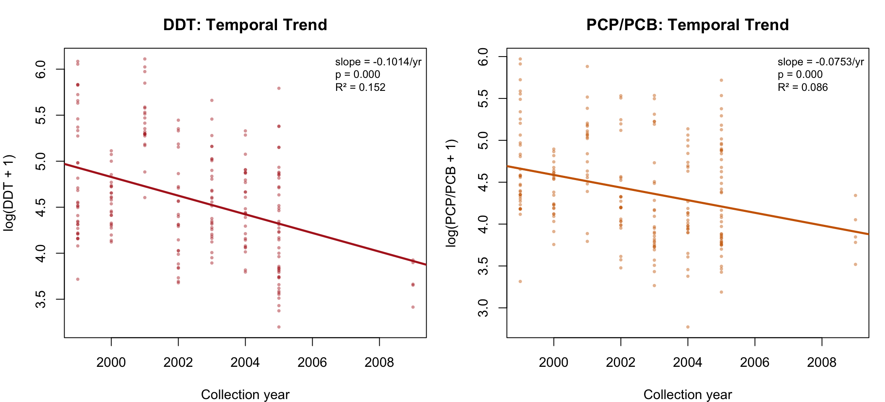
- DDT: slope = -0.1014 log-units/yr, R² = 0.152, p = 0.000 - PCP/PCB: slope = -0.0753 log-units/yr, R² = 0.086, p = 0.00014C. Spatial Cross-Validation (Leave-One-Area-Out, GAM DDT)
Each geographic area is withheld in turn; a GAM is fit on the remaining areas and used to predict log(DDT+1) in the withheld area. RMSE and MAE are on the log(DDT+1) scale.
if (!exists("real_dat") || nrow(real_dat) < 20) {
cat("real_dat not available.\n")
} else {
if (!requireNamespace("mgcv", quietly = TRUE)) library(mgcv)
gdat_cv <- real_dat[
is.finite(real_dat$DDT_real) &
is.finite(real_dat$LATITUDE) &
is.finite(real_dat$LONGITUDE), ]
gdat_cv$logDDT <- log1p(gdat_cv$DDT_real)
areas_cv <- unique(gdat_cv$GEOGRAPHIC_AREA)
areas_cv <- areas_cv[!is.na(areas_cv) & nchar(trimws(areas_cv)) > 0]
if (length(areas_cv) < 3) {
cat("Fewer than 3 geographic areas — skipping leave-one-area-out CV.\n")
} else {
cv_rows <- lapply(areas_cv, function(a) {
train <- gdat_cv[gdat_cv$GEOGRAPHIC_AREA != a, ]
test <- gdat_cv[gdat_cv$GEOGRAPHIC_AREA == a, ]
if (nrow(train) < 15 || nrow(test) < 2) return(NULL)
k_cv <- min(15, nrow(train) - 5)
m_cv <- tryCatch(
gam(logDDT ~ s(LONGITUDE, LATITUDE, k = k_cv),
data = train, method = "REML"),
error = function(e) NULL)
if (is.null(m_cv)) return(NULL)
pred_cv <- tryCatch(
predict(m_cv, newdata = test, type = "response"),
error = function(e) NULL)
if (is.null(pred_cv)) return(NULL)
data.frame(
Area = a,
N_test = nrow(test),
RMSE = round(sqrt(mean((test$logDDT - pred_cv)^2)), 3),
MAE = round(mean(abs(test$logDDT - pred_cv)), 3),
stringsAsFactors = FALSE)
})
cv_tab <- do.call(rbind, Filter(Negate(is.null), cv_rows))
if (!is.null(cv_tab) && nrow(cv_tab) > 0) {
mean_row <- data.frame(
Area = "**Mean across areas**", N_test = NA,
RMSE = round(mean(cv_tab$RMSE), 3),
MAE = round(mean(cv_tab$MAE), 3),
stringsAsFactors = FALSE)
cv_out <- rbind(cv_tab, mean_row)
write.csv(cv_out, file.path(out_dir, "spatial_cv_loao_results.csv"),
row.names = FALSE)
print(knitr::kable(cv_out, row.names = FALSE,
col.names = c("Held-out area", "N test",
"RMSE (log-scale)", "MAE (log-scale)"),
caption = paste(
"Table 3. Leave-one-area-out spatial cross-validation (DDT, GAM).",
"Each geographic area is withheld in turn;",
"the GAM is fit on the remaining areas and predictions are evaluated",
"on withheld samples. Errors on log(DDT+1) scale.")))
}
}
}| Held-out area | N test | RMSE (log-scale) | MAE (log-scale) |
|---|---|---|---|
| Chukchi Sea | 14 | 0.637 | 0.437 |
| Bering Strait | 15 | 0.476 | 0.384 |
| Gulf of Alaska | 110 | 3.838 | 3.681 |
| Aleutian Islands | 24 | 0.362 | 0.299 |
| Bering Sea, Norton Sound | 10 | 0.998 | 0.952 |
| Mean across areas | NA | 1.262 | 1.151 |
14D. Recommended Next Steps for Predictive Modeling
| Priority | Method | Purpose | R package |
|---|---|---|---|
| 1 | Empirical variogram | Quantify spatial autocorrelation range | gstat, sf |
| 2 | Ordinary kriging | Unbiased interpolation to unsampled sites | gstat |
| 3 | GAM + oceanographic covariates | Mechanistic spatial prediction | mgcv |
| 4 | Block spatial CV | Honest prediction error for autocorrelated data | blockCV |
| 5 | Random forest + spatial CV | Non-linear covariate effects | ranger + blockCV |
| 6 | Mixed model: species + year random effects | Partition spatial vs. temporal vs. species variance | lme4 / glmmTMB |
| 7 | Temporal ARMA on annual means | Trend and cycle detection | forecast |
| 8 | Transfer to unmonitored taxa | Exposure prediction for new species/regions | GAM with species factor |
The distance-decay slopes estimated in this report directly parameterise kriging variograms: for the exponential model the spatial range r = 1/b (where b is the fitted decay coefficient). For DDT, b ≈ 2.54 × 10⁻⁴ km⁻¹ gives r ≈ 3,937 km, indicating that samples within roughly 4,000 km carry meaningful shared spatial information and are suitable co-variates for kriging.
15) Spatiotemporal Scaling Model (Distance + Time)
This section fits a joint scaling model for contaminant similarity as a function of both geographic distance and collection-year separation:
\[ ext{sim}_{ij} = \beta_0 + \beta_1\log(d_{ij}+1) + \beta_2\log(\Delta t_{ij}+1) + \beta_3\log(d_{ij}+1)\log(\Delta t_{ij}+1) + \varepsilon_{ij} \]
where \(d_{ij}\) is pairwise geographic distance (km) and \(\Delta t_{ij}\) is pairwise absolute time lag (years).
if (!exists("pair_real")) {
cat("pair_real not available — skipping spatiotemporal scaling model.\n")
} else {
if (!"time_lag_years" %in% names(pair_real)) {
cat("time_lag_years missing in pair_real — rerun real-data analysis chunk first.\n")
} else {
resp_vars <- c("sim_DDT", "sim_PCP_or_PCB", "sim_isotope", "sim_overall")
resp_names <- c("DDT", "PCP/PCB", "Isotope", "Overall")
fit_st <- function(df, yvar) {
ok <- is.finite(df[[yvar]]) & is.finite(df$distance_km) & is.finite(df$time_lag_years)
d <- df$distance_km[ok]
t <- df$time_lag_years[ok]
y <- df[[yvar]][ok]
if (length(y) < 30 || length(unique(t)) < 2) return(NULL)
st_df <- data.frame(
y = y,
log_dist = log(d + 1),
log_time = log(t + 1)
)
m_add <- lm(y ~ log_dist + log_time, data = st_df)
m_int <- lm(y ~ log_dist * log_time, data = st_df)
b_int <- coef(summary(m_int))
get_coef <- function(term, col) if (term %in% rownames(b_int)) b_int[term, col] else NA_real_
data.frame(
response = yvar,
n_pairs = nrow(st_df),
dist_coef = coef(m_int)["log_dist"],
time_coef = coef(m_int)["log_time"],
interaction_coef = coef(m_int)["log_dist:log_time"],
p_dist = get_coef("log_dist", "Pr(>|t|)"),
p_time = get_coef("log_time", "Pr(>|t|)"),
p_interaction = get_coef("log_dist:log_time", "Pr(>|t|)"),
R2_additive = summary(m_add)$r.squared,
R2_interaction = summary(m_int)$r.squared,
AIC_additive = AIC(m_add),
AIC_interaction = AIC(m_int),
delta_AIC_int_vs_add = AIC(m_add) - AIC(m_int),
stringsAsFactors = FALSE
)
}
st_out <- do.call(rbind, lapply(resp_vars, function(v) fit_st(pair_real, v)))
if (!is.null(st_out) && nrow(st_out) > 0) {
st_out$response <- resp_names[match(st_out$response, resp_vars)]
num_cols <- setdiff(names(st_out), c("response"))
st_out[num_cols] <- lapply(st_out[num_cols], function(x) round(x, 4))
write.csv(st_out, file.path(out_dir, "spatiotemporal_scaling_model_summary.csv"), row.names = FALSE)
print(knitr::kable(
st_out,
row.names = FALSE,
col.names = c(
"Response", "N pairs", "Beta distance", "Beta time", "Beta distance x time",
"p distance", "p time", "p interaction", "R2 additive", "R2 interaction",
"AIC additive", "AIC interaction", "Delta AIC (int-add)"
),
caption = paste(
"Table 4. Spatiotemporal scaling models.",
"Positive Delta AIC indicates interaction model support over additive model."
)
))
}
}
}| Response | N pairs | Beta distance | Beta time | Beta distance x time | p distance | p time | p interaction | R2 additive | R2 interaction | AIC additive | AIC interaction | Delta AIC (int-add) |
|---|---|---|---|---|---|---|---|---|---|---|---|---|
| DDT | 23220 | -0.0263 | -0.0798 | 0.0105 | 0 | 0 | 0 | 0.0210 | 0.0237 | 8243.655 | 8181.710 | 61.9449 |
| PCP/PCB | 23220 | -0.0180 | -0.0909 | 0.0125 | 0 | 0 | 0 | 0.0052 | 0.0090 | 8586.229 | 8499.252 | 86.9766 |
| Isotope | 23220 | -0.0248 | -0.0451 | 0.0038 | 0 | 0 | 0 | 0.0659 | 0.0666 | -8780.928 | -8796.158 | 15.2298 |
| Overall | 23220 | -0.0230 | -0.0719 | 0.0089 | 0 | 0 | 0 | 0.0426 | 0.0473 | -12880.027 | -12992.713 | 112.6863 |
if (exists("pair_real") && "time_lag_years" %in% names(pair_real)) {
resp_vars <- c("sim_DDT", "sim_PCP_or_PCB", "sim_isotope", "sim_overall")
resp_names <- c("DDT", "PCP/PCB", "Isotope", "Overall")
q <- quantile(pair_real$time_lag_years, probs = c(0, 1/3, 2/3, 1), na.rm = TRUE)
q[1] <- min(q[1], 0)
pair_real$time_group <- cut(
pair_real$time_lag_years,
breaks = unique(q),
include.lowest = TRUE,
labels = c("Low time lag", "Mid time lag", "High time lag")[seq_len(length(unique(q)) - 1)]
)
par(mfrow = c(2, 2), mar = c(4, 4, 3, 1))
cols <- c("steelblue3", "darkorange3", "firebrick3")
for (ii in seq_along(resp_vars)) {
v <- resp_vars[ii]
d <- pair_real$distance_km
y <- pair_real[[v]]
g <- pair_real$time_group
ok <- is.finite(d) & is.finite(y) & !is.na(g)
d <- d[ok]; y <- y[ok]; g <- droplevels(g[ok])
plot(d, y,
pch = 16, cex = 0.30,
col = adjustcolor("black", alpha.f = 0.10),
xlab = "Distance (km)", ylab = "Similarity",
main = paste(resp_names[ii], "by time-lag tercile"))
dseq <- seq(0.1, max(d), length.out = 300)
levs <- levels(g)
for (jj in seq_along(levs)) {
idx <- g == levs[jj]
if (sum(idx) < 20) next
m <- lm(y[idx] ~ log(d[idx] + 1))
a <- coef(m)[1]; b <- coef(m)[2]
lines(dseq, a + b * log(dseq + 1), col = cols[jj], lwd = 2.5)
}
legend("topright", bty = "n", cex = 0.75,
legend = levels(g), col = cols[seq_along(levels(g))], lwd = 2.5)
}
}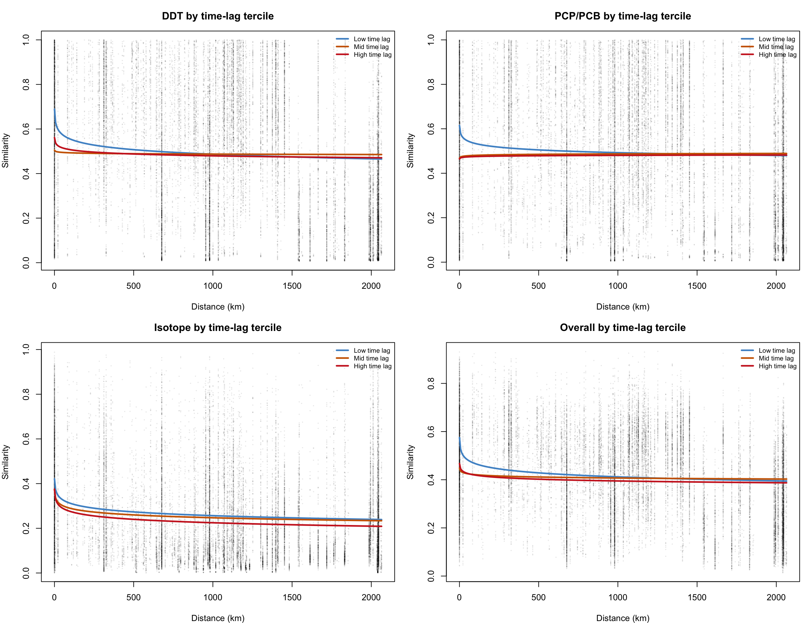
15B) Dyadic Mixed-Effects Spatiotemporal Model + Blocked CV
To reduce pseudo-replication from pairwise expansion, this section fits a dyadic mixed-effects model with crossed random effects for both members of each pair (individual IDs, species, and geographic areas), then evaluates prediction using leave-one-area-out blocked cross-validation.
if (!exists("pair_real")) {
cat("pair_real not available — skipping dyadic mixed-effects model.\n")
} else if (!all(c("time_lag_years", "id_i", "id_j", "area_i", "area_j", "species_i", "species_j") %in% names(pair_real))) {
cat("Required pairwise fields not found — rerun real-data analysis chunk first.\n")
} else {
if (!requireNamespace("lme4", quietly = TRUE)) {
install.packages("lme4", repos = "https://cran.r-project.org/")
}
library(lme4)
fit_dyadic <- function(df, yvar) {
keep <- is.finite(df[[yvar]]) &
is.finite(df$distance_km) & is.finite(df$time_lag_years) &
!is.na(df$id_i) & !is.na(df$id_j) & !is.na(df$area_i) & !is.na(df$area_j) &
!is.na(df$species_i) & !is.na(df$species_j)
dat <- df[keep, c(yvar, "distance_km", "time_lag_years", "id_i", "id_j", "area_i", "area_j", "species_i", "species_j")]
names(dat)[1] <- "y"
if (nrow(dat) < 100) return(NULL)
dat$log_dist <- log(dat$distance_km + 1)
dat$log_time <- log(dat$time_lag_years + 1)
dat$id_i <- as.factor(dat$id_i)
dat$id_j <- as.factor(dat$id_j)
dat$area_i <- as.factor(dat$area_i)
dat$area_j <- as.factor(dat$area_j)
dat$species_i <- as.factor(dat$species_i)
dat$species_j <- as.factor(dat$species_j)
ctrl <- lmerControl(optimizer = "bobyqa", optCtrl = list(maxfun = 1e5))
full_formula <- y ~ log_dist * log_time +
(1 | id_i) + (1 | id_j) +
(1 | species_i) + (1 | species_j) +
(1 | area_i) + (1 | area_j)
fallback_formula <- y ~ log_dist * log_time +
(1 | species_i) + (1 | species_j) +
(1 | area_i) + (1 | area_j)
mod <- try(lmer(full_formula, data = dat, REML = FALSE, control = ctrl), silent = TRUE)
model_type <- "full_dyadic"
if (inherits(mod, "try-error")) {
mod <- try(lmer(fallback_formula, data = dat, REML = FALSE, control = ctrl), silent = TRUE)
model_type <- "fallback_species_area"
}
if (inherits(mod, "try-error")) return(NULL)
sm <- summary(mod)
cf <- as.data.frame(sm$coefficients)
cf$term <- rownames(cf)
get_cf <- function(term, colname) {
if (!(term %in% cf$term)) return(NA_real_)
cf[cf$term == term, colname][1]
}
fixed_row <- data.frame(
response = yvar,
model_type = model_type,
n_pairs = nrow(dat),
beta_dist = get_cf("log_dist", "Estimate"),
beta_time = get_cf("log_time", "Estimate"),
beta_dist_time = get_cf("log_dist:log_time", "Estimate"),
se_dist = get_cf("log_dist", "Std. Error"),
se_time = get_cf("log_time", "Std. Error"),
se_dist_time = get_cf("log_dist:log_time", "Std. Error"),
t_dist = get_cf("log_dist", "t value"),
t_time = get_cf("log_time", "t value"),
t_dist_time = get_cf("log_dist:log_time", "t value"),
AIC = AIC(mod),
stringsAsFactors = FALSE
)
list(model = mod, data = dat, fixed = fixed_row)
}
run_blocked_cv <- function(dat, model_type, yvar) {
areas <- sort(unique(c(as.character(dat$area_i), as.character(dat$area_j))))
areas <- areas[!is.na(areas) & nchar(trimws(areas)) > 0]
if (length(areas) < 3) return(NULL)
ctrl <- lmerControl(optimizer = "bobyqa", optCtrl = list(maxfun = 1e5))
full_formula <- y ~ log_dist * log_time +
(1 | id_i) + (1 | id_j) +
(1 | species_i) + (1 | species_j) +
(1 | area_i) + (1 | area_j)
fallback_formula <- y ~ log_dist * log_time +
(1 | species_i) + (1 | species_j) +
(1 | area_i) + (1 | area_j)
cv_rows <- lapply(areas, function(a) {
test_idx <- as.character(dat$area_i) == a | as.character(dat$area_j) == a
train <- dat[!test_idx, ]
test <- dat[test_idx, ]
if (nrow(train) < 100 || nrow(test) < 20) return(NULL)
form <- if (model_type == "full_dyadic") full_formula else fallback_formula
fit <- try(lmer(form, data = train, REML = FALSE, control = ctrl), silent = TRUE)
if (inherits(fit, "try-error")) {
fit <- try(lmer(fallback_formula, data = train, REML = FALSE, control = ctrl), silent = TRUE)
}
if (inherits(fit, "try-error")) return(NULL)
pred <- try(predict(fit, newdata = test, allow.new.levels = TRUE), silent = TRUE)
if (inherits(pred, "try-error")) return(NULL)
obs <- test$y
rmse <- sqrt(mean((obs - pred)^2, na.rm = TRUE))
mae <- mean(abs(obs - pred), na.rm = TRUE)
r2 <- if (length(unique(obs)) > 1) cor(obs, pred, use = "complete.obs")^2 else NA_real_
data.frame(
response = yvar,
held_out_area = a,
n_test = nrow(test),
RMSE = rmse,
MAE = mae,
R2_pred = r2,
stringsAsFactors = FALSE
)
})
cv_tab <- do.call(rbind, Filter(Negate(is.null), cv_rows))
if (is.null(cv_tab) || nrow(cv_tab) == 0) return(NULL)
mean_row <- data.frame(
response = yvar,
held_out_area = "Mean across held-out areas",
n_test = NA,
RMSE = mean(cv_tab$RMSE, na.rm = TRUE),
MAE = mean(cv_tab$MAE, na.rm = TRUE),
R2_pred = mean(cv_tab$R2_pred, na.rm = TRUE),
stringsAsFactors = FALSE
)
rbind(cv_tab, mean_row)
}
targets <- c("sim_overall", "sim_DDT")
fit_objs <- lapply(targets, function(v) fit_dyadic(pair_real, v))
names(fit_objs) <- targets
fit_objs <- fit_objs[!vapply(fit_objs, is.null, logical(1))]
if (length(fit_objs) == 0) {
cat("Dyadic mixed-effects models failed or insufficient data.\n")
} else {
fixed_tab <- do.call(rbind, lapply(fit_objs, function(x) x$fixed))
fixed_tab$response <- c(sim_overall = "Overall", sim_DDT = "DDT")[fixed_tab$response]
num_cols <- setdiff(names(fixed_tab), c("response", "model_type"))
fixed_tab[num_cols] <- lapply(fixed_tab[num_cols], function(x) round(x, 4))
write.csv(fixed_tab, file.path(out_dir, "dyadic_mixed_model_fixed_effects.csv"), row.names = FALSE)
print(knitr::kable(
fixed_tab,
row.names = FALSE,
col.names = c(
"Response", "Model", "N pairs",
"Beta distance", "Beta time", "Beta distance x time",
"SE dist", "SE time", "SE dist x time",
"t dist", "t time", "t dist x time", "AIC"
),
caption = paste(
"Table 5. Dyadic mixed-effects spatiotemporal model fixed effects.",
"Crossed random effects account for pair-member, species, and area dependence."
)
))
cv_tabs <- do.call(rbind, lapply(names(fit_objs), function(v) {
out <- run_blocked_cv(fit_objs[[v]]$data, fit_objs[[v]]$fixed$model_type[1], v)
out
}))
if (!is.null(cv_tabs) && nrow(cv_tabs) > 0) {
cv_tabs$response <- c(sim_overall = "Overall", sim_DDT = "DDT")[cv_tabs$response]
num_cols <- c("n_test", "RMSE", "MAE", "R2_pred")
for (nc in num_cols) {
if (nc %in% names(cv_tabs)) cv_tabs[[nc]] <- round(cv_tabs[[nc]], 4)
}
write.csv(cv_tabs, file.path(out_dir, "dyadic_mixed_model_blocked_cv.csv"), row.names = FALSE)
print(knitr::kable(
cv_tabs,
row.names = FALSE,
col.names = c("Response", "Held-out area", "N test", "RMSE", "MAE", "Predictive R2"),
caption = paste(
"Table 6. Leave-one-area-out blocked cross-validation for dyadic mixed models.",
"Test rows include any pair touching the held-out area, reducing spatial leakage."
)
))
}
}
}| Response | Model | N pairs | Beta distance | Beta time | Beta distance x time | SE dist | SE time | SE dist x time | t dist | t time | t dist x time | AIC |
|---|---|---|---|---|---|---|---|---|---|---|---|---|
| Overall | full_dyadic | 23220 | -0.0269 | -0.0162 | 3e-04 | 7e-04 | 0.0040 | 6e-04 | -40.3590 | -4.0472 | 0.4220 | -29166.859 |
| DDT | full_dyadic | 23220 | -0.0389 | 0.0053 | -7e-04 | 1e-03 | 0.0061 | 9e-04 | -38.4652 | 0.8707 | -0.6965 | -9800.313 |
| Response | Held-out area | N test | RMSE | MAE | Predictive R2 |
|---|---|---|---|---|---|
| Overall | Aleutian Islands | 4884 | 0.1366 | 0.1112 | 0.4478 |
| Overall | Bering Sea | 8342 | 0.1415 | 0.1123 | 0.4320 |
| Overall | Bering Sea, Norton Sound | 2105 | 0.1336 | 0.1109 | 0.6107 |
| Overall | Bering Strait | 3120 | 0.1344 | 0.1086 | 0.4302 |
| Overall | Chukchi Sea | 2919 | 0.1445 | 0.1156 | 0.4709 |
| Overall | Gulf of Alaska | 17655 | 0.2153 | 0.1742 | 0.0396 |
| Overall | Mean across held-out areas | NA | 0.1510 | 0.1221 | 0.4052 |
| DDT | Aleutian Islands | 4884 | 0.2057 | 0.1636 | 0.4957 |
| DDT | Bering Sea | 8342 | 0.2227 | 0.1765 | 0.5045 |
| DDT | Bering Sea, Norton Sound | 2105 | 0.1931 | 0.1656 | 0.5793 |
| DDT | Bering Strait | 3120 | 0.2130 | 0.1775 | 0.4985 |
| DDT | Chukchi Sea | 2919 | 0.2060 | 0.1632 | 0.5381 |
| DDT | Gulf of Alaska | 17655 | 0.3844 | 0.3187 | 0.0046 |
| DDT | Mean across held-out areas | NA | 0.2375 | 0.1942 | 0.4368 |
if (exists("fit_objs") && length(fit_objs) > 0) {
par(mfrow = c(2, 2), mar = c(7, 4, 3, 1))
for (nm in names(fit_objs)) {
fit_obj <- fit_objs[[nm]]
cf <- as.data.frame(summary(fit_obj$model)$coefficients)
cf$term <- rownames(cf)
keep <- cf$term %in% c("log_dist", "log_time", "log_dist:log_time")
cf <- cf[keep, , drop = FALSE]
labs <- c(log_dist = "Distance", log_time = "Time lag", `log_dist:log_time` = "Distance x Time")
xpos <- seq_len(nrow(cf))
ylim_r <- range(c(cf$Estimate - 1.96 * cf$`Std. Error`, cf$Estimate + 1.96 * cf$`Std. Error`, 0))
plot(xpos, cf$Estimate,
ylim = ylim_r,
xlim = c(0.5, nrow(cf) + 0.5),
xaxt = "n",
xlab = "",
ylab = "Coefficient estimate",
main = paste(c(sim_overall = "Overall", sim_DDT = "DDT")[nm], "mixed model"),
pch = 19,
col = if (nm == "sim_overall") "darkorchid4" else "firebrick")
axis(1, at = xpos, labels = labs[cf$term], las = 2)
abline(h = 0, lty = 2, col = "grey50")
segments(xpos, cf$Estimate - 1.96 * cf$`Std. Error`,
xpos, cf$Estimate + 1.96 * cf$`Std. Error`,
lwd = 2,
col = if (nm == "sim_overall") "darkorchid4" else "firebrick")
}
if (exists("cv_tabs") && !is.null(cv_tabs) && nrow(cv_tabs) > 0) {
cv_plot <- cv_tabs[cv_tabs$held_out_area != "Mean across held-out areas", ]
areas <- unique(cv_plot$held_out_area)
responses <- unique(cv_plot$response)
rmse_mat <- sapply(responses, function(resp) cv_plot$RMSE[match(areas, cv_plot$held_out_area[cv_plot$response == resp])])
r2_mat <- sapply(responses, function(resp) cv_plot$R2_pred[match(areas, cv_plot$held_out_area[cv_plot$response == resp])])
if (is.null(dim(rmse_mat))) rmse_mat <- matrix(rmse_mat, ncol = 1, dimnames = list(areas, responses))
if (is.null(dim(r2_mat))) r2_mat <- matrix(r2_mat, ncol = 1, dimnames = list(areas, responses))
barplot(t(rmse_mat), beside = TRUE,
col = c("darkorchid4", "firebrick")[seq_len(ncol(rmse_mat))],
names.arg = areas,
las = 2,
ylab = "Blocked CV RMSE",
main = "Dyadic mixed model blocked CV")
legend("topright", bty = "n",
legend = c(sim_overall = "Overall", sim_DDT = "DDT")[colnames(rmse_mat)],
fill = c("darkorchid4", "firebrick")[seq_len(ncol(rmse_mat))])
matplot(seq_along(areas), r2_mat,
type = "b", pch = 19, lty = 1,
col = c("darkorchid4", "firebrick")[seq_len(ncol(r2_mat))],
xaxt = "n",
xlab = "Held-out area",
ylab = expression(R^2),
main = "Dyadic mixed model predictive fit")
axis(1, at = seq_along(areas), labels = areas, las = 2)
legend("topright", bty = "n",
legend = c(sim_overall = "Overall", sim_DDT = "DDT")[colnames(r2_mat)],
col = c("darkorchid4", "firebrick")[seq_len(ncol(r2_mat))],
lty = 1, pch = 19)
} else {
plot.new(); title("Blocked CV RMSE")
plot.new(); title("Blocked CV predictive fit")
}
}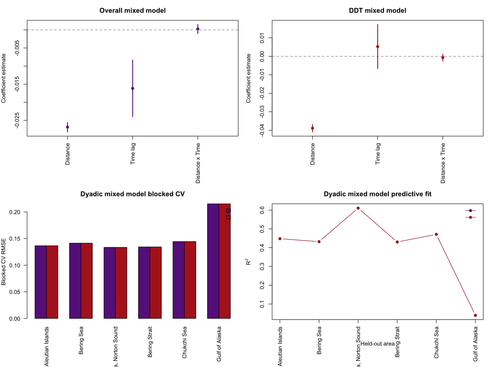
15C) Trophic Covariate Extension for Transferability
We do not yet have tracking-derived movement covariates in this dataset, so the highest-value biodiversity extension currently available is a trophic proxy model. Here, pairwise differences in \(\delta^{15}N\) and \(\delta^{13}C\) are used as proxies for trophic-position mismatch and habitat/foraging mismatch, respectively. These covariates test whether Gulf-of-Alaska transfer improves when ecological similarity is modeled alongside space and time. All trophic/habitat isotope covariates are interpreted as transfer-oriented ecological similarity indices under a baseline-stability assumption.
if (!exists("pair_real")) {
cat("pair_real not available — skipping trophic extension.\n")
} else {
if (!exists("real_dat")) {
fp <- file.path(out_dir, "real_testcase_prepared_data.csv")
if (file.exists(fp)) real_dat <- read.csv(fp, stringsAsFactors = FALSE)
}
if (!exists("real_dat") || !all(c("GUALIQUOTID", "delta13C_real", "delta15N_real") %in% names(real_dat))) {
cat("real_dat with isotope fields not available — skipping trophic extension.\n")
} else {
iso_map <- real_dat[, c("GUALIQUOTID", "delta13C_real", "delta15N_real")]
iso_i <- iso_map
names(iso_i) <- c("id_i", "delta13C_i", "delta15N_i")
iso_j <- iso_map
names(iso_j) <- c("id_j", "delta13C_j", "delta15N_j")
pair_trophic <- merge(pair_real, iso_i, by = "id_i", all.x = TRUE)
pair_trophic <- merge(pair_trophic, iso_j, by = "id_j", all.x = TRUE)
pair_trophic$trophic_diff_n15 <- abs(pair_trophic$delta15N_i - pair_trophic$delta15N_j)
pair_trophic$habitat_diff_c13 <- abs(pair_trophic$delta13C_i - pair_trophic$delta13C_j)
pair_trophic$mean_trophic_n15 <- rowMeans(cbind(pair_trophic$delta15N_i, pair_trophic$delta15N_j), na.rm = TRUE)
pair_trophic$mean_habitat_c13 <- rowMeans(cbind(pair_trophic$delta13C_i, pair_trophic$delta13C_j), na.rm = TRUE)
fit_dyadic_trophic <- function(df, yvar) {
keep <- is.finite(df[[yvar]]) &
is.finite(df$distance_km) & is.finite(df$time_lag_years) &
is.finite(df$trophic_diff_n15) & is.finite(df$habitat_diff_c13) &
is.finite(df$mean_trophic_n15) & is.finite(df$mean_habitat_c13) &
!is.na(df$id_i) & !is.na(df$id_j) & !is.na(df$area_i) & !is.na(df$area_j) &
!is.na(df$species_i) & !is.na(df$species_j)
dat <- df[keep, c(
yvar, "distance_km", "time_lag_years",
"trophic_diff_n15", "habitat_diff_c13", "mean_trophic_n15", "mean_habitat_c13",
"id_i", "id_j", "area_i", "area_j", "species_i", "species_j"
)]
names(dat)[1] <- "y"
if (nrow(dat) < 100) return(NULL)
dat$log_dist <- log(dat$distance_km + 1)
dat$log_time <- log(dat$time_lag_years + 1)
dat$id_i <- as.factor(dat$id_i)
dat$id_j <- as.factor(dat$id_j)
dat$area_i <- as.factor(dat$area_i)
dat$area_j <- as.factor(dat$area_j)
dat$species_i <- as.factor(dat$species_i)
dat$species_j <- as.factor(dat$species_j)
ctrl <- lmerControl(optimizer = "bobyqa", optCtrl = list(maxfun = 1e5))
form_full <- y ~ log_dist * log_time + trophic_diff_n15 + habitat_diff_c13 +
mean_trophic_n15 + mean_habitat_c13 +
(1 | id_i) + (1 | id_j) +
(1 | species_i) + (1 | species_j) +
(1 | area_i) + (1 | area_j)
form_fallback <- y ~ log_dist * log_time + trophic_diff_n15 + habitat_diff_c13 +
mean_trophic_n15 + mean_habitat_c13 +
(1 | species_i) + (1 | species_j) +
(1 | area_i) + (1 | area_j)
mod <- try(lmer(form_full, data = dat, REML = FALSE, control = ctrl), silent = TRUE)
model_type <- "trophic_full_dyadic"
if (inherits(mod, "try-error")) {
mod <- try(lmer(form_fallback, data = dat, REML = FALSE, control = ctrl), silent = TRUE)
model_type <- "trophic_fallback_species_area"
}
if (inherits(mod, "try-error")) return(NULL)
sm <- summary(mod)
cf <- as.data.frame(sm$coefficients)
cf$term <- rownames(cf)
get_cf <- function(term, colname) {
if (!(term %in% cf$term)) return(NA_real_)
cf[cf$term == term, colname][1]
}
fixed_row <- data.frame(
response = yvar,
model_type = model_type,
n_pairs = nrow(dat),
beta_dist = get_cf("log_dist", "Estimate"),
beta_time = get_cf("log_time", "Estimate"),
beta_dist_time = get_cf("log_dist:log_time", "Estimate"),
beta_trophic_diff = get_cf("trophic_diff_n15", "Estimate"),
beta_habitat_diff = get_cf("habitat_diff_c13", "Estimate"),
beta_mean_trophic = get_cf("mean_trophic_n15", "Estimate"),
beta_mean_habitat = get_cf("mean_habitat_c13", "Estimate"),
AIC = AIC(mod),
stringsAsFactors = FALSE
)
list(model = mod, data = dat, fixed = fixed_row)
}
run_blocked_cv_trophic <- function(dat, model_type, yvar) {
areas <- sort(unique(c(as.character(dat$area_i), as.character(dat$area_j))))
areas <- areas[!is.na(areas) & nchar(trimws(areas)) > 0]
if (length(areas) < 3) return(NULL)
ctrl <- lmerControl(optimizer = "bobyqa", optCtrl = list(maxfun = 1e5))
form_full <- y ~ log_dist * log_time + trophic_diff_n15 + habitat_diff_c13 +
mean_trophic_n15 + mean_habitat_c13 +
(1 | id_i) + (1 | id_j) +
(1 | species_i) + (1 | species_j) +
(1 | area_i) + (1 | area_j)
form_fallback <- y ~ log_dist * log_time + trophic_diff_n15 + habitat_diff_c13 +
mean_trophic_n15 + mean_habitat_c13 +
(1 | species_i) + (1 | species_j) +
(1 | area_i) + (1 | area_j)
cv_rows <- lapply(areas, function(a) {
test_idx <- as.character(dat$area_i) == a | as.character(dat$area_j) == a
train <- dat[!test_idx, ]
test <- dat[test_idx, ]
if (nrow(train) < 100 || nrow(test) < 20) return(NULL)
form <- if (model_type == "trophic_full_dyadic") form_full else form_fallback
fit <- try(lmer(form, data = train, REML = FALSE, control = ctrl), silent = TRUE)
if (inherits(fit, "try-error")) {
fit <- try(lmer(form_fallback, data = train, REML = FALSE, control = ctrl), silent = TRUE)
}
if (inherits(fit, "try-error")) return(NULL)
pred <- try(predict(fit, newdata = test, allow.new.levels = TRUE), silent = TRUE)
if (inherits(pred, "try-error")) return(NULL)
obs <- test$y
data.frame(
response = yvar,
held_out_area = a,
n_test = nrow(test),
RMSE = sqrt(mean((obs - pred)^2, na.rm = TRUE)),
MAE = mean(abs(obs - pred), na.rm = TRUE),
R2_pred = if (length(unique(obs)) > 1) cor(obs, pred, use = "complete.obs")^2 else NA_real_,
stringsAsFactors = FALSE
)
})
cv_tab <- do.call(rbind, Filter(Negate(is.null), cv_rows))
if (is.null(cv_tab) || nrow(cv_tab) == 0) return(NULL)
mean_row <- data.frame(
response = yvar,
held_out_area = "Mean across held-out areas",
n_test = NA,
RMSE = mean(cv_tab$RMSE, na.rm = TRUE),
MAE = mean(cv_tab$MAE, na.rm = TRUE),
R2_pred = mean(cv_tab$R2_pred, na.rm = TRUE),
stringsAsFactors = FALSE
)
rbind(cv_tab, mean_row)
}
targets <- c("sim_overall", "sim_DDT")
trophic_objs <- lapply(targets, function(v) fit_dyadic_trophic(pair_trophic, v))
names(trophic_objs) <- targets
trophic_objs <- trophic_objs[!vapply(trophic_objs, is.null, logical(1))]
if (length(trophic_objs) == 0) {
cat("Trophic mixed-effects models failed or insufficient data.\n")
} else {
trophic_fixed <- do.call(rbind, lapply(trophic_objs, function(x) x$fixed))
trophic_fixed$response <- c(sim_overall = "Overall", sim_DDT = "DDT")[trophic_fixed$response]
num_cols <- setdiff(names(trophic_fixed), c("response", "model_type"))
trophic_fixed[num_cols] <- lapply(trophic_fixed[num_cols], function(x) round(x, 4))
write.csv(trophic_fixed, file.path(out_dir, "dyadic_trophic_model_fixed_effects.csv"), row.names = FALSE)
print(knitr::kable(
trophic_fixed,
row.names = FALSE,
col.names = c(
"Response", "Model", "N pairs", "Beta distance", "Beta time", "Beta distance x time",
"Beta trophic diff", "Beta habitat diff", "Beta mean trophic", "Beta mean habitat", "AIC"
),
caption = paste(
"Table 7. Trophic-augmented dyadic mixed-effects models.",
"New biodiversity covariates are isotope-derived trophic and habitat proxies."
)
))
trophic_cv <- do.call(rbind, lapply(names(trophic_objs), function(v) {
run_blocked_cv_trophic(trophic_objs[[v]]$data, trophic_objs[[v]]$fixed$model_type[1], v)
}))
if (!is.null(trophic_cv) && nrow(trophic_cv) > 0) {
trophic_cv$response <- c(sim_overall = "Overall", sim_DDT = "DDT")[trophic_cv$response]
num_cols <- c("n_test", "RMSE", "MAE", "R2_pred")
for (nc in num_cols) {
if (nc %in% names(trophic_cv)) trophic_cv[[nc]] <- round(trophic_cv[[nc]], 4)
}
write.csv(trophic_cv, file.path(out_dir, "dyadic_trophic_model_blocked_cv.csv"), row.names = FALSE)
base_cv_fp <- file.path(out_dir, "dyadic_mixed_model_blocked_cv.csv")
if (file.exists(base_cv_fp)) {
base_cv <- read.csv(base_cv_fp, stringsAsFactors = FALSE)
base_cv$model <- "Baseline mixed model"
trophic_cv$model <- "Trophic mixed model"
compare_cv <- rbind(base_cv, trophic_cv)
keep_rows <- compare_cv$held_out_area %in% c("Gulf of Alaska", "Mean across held-out areas")
compare_cv <- compare_cv[keep_rows, c("response", "model", "held_out_area", "RMSE", "MAE", "R2_pred")]
names(compare_cv) <- c("Response", "Model", "Held-out area", "RMSE", "MAE", "Predictive_R2")
write.csv(compare_cv, file.path(out_dir, "dyadic_trophic_transfer_comparison.csv"), row.names = FALSE)
print(knitr::kable(
compare_cv,
row.names = FALSE,
col.names = c("Response", "Model", "Held-out area", "RMSE", "MAE", "Predictive R2"),
caption = paste(
"Table 8. Transfer-performance comparison for the baseline versus trophic-augmented mixed models.",
"Rows highlight Gulf of Alaska and the mean across held-out areas."
)
))
gulf_compare <- compare_cv[compare_cv$`Held-out area` == "Gulf of Alaska", ]
if (nrow(gulf_compare) > 0) {
cat("\nGulf of Alaska remains the hardest transfer domain. The trophic extension should be interpreted as a first biodiversity-aware stress test, not a full ecological solution; meaningful further gains will likely require explicit movement/connectivity covariates or oceanographic predictors.\n")
}
}
}
}
}
}| Response | Model | N pairs | Beta distance | Beta time | Beta distance x time | Beta trophic diff | Beta habitat diff | Beta mean trophic | Beta mean habitat | AIC |
|---|---|---|---|---|---|---|---|---|---|---|
| Overall | trophic_full_dyadic | 23220 | -0.0228 | -0.0081 | 6e-04 | -0.0208 | -0.0417 | 0.0093 | -0.0389 | -32573.747 |
| DDT | trophic_full_dyadic | 23220 | -0.0389 | 0.0050 | -7e-04 | 0.0003 | 0.0005 | 0.0170 | -0.0479 | -9815.946 |
| Response | Model | Held-out area | RMSE | MAE | Predictive R2 |
|---|---|---|---|---|---|
| Overall | Baseline mixed model | Gulf of Alaska | 0.2153 | 0.1742 | 0.0396 |
| Overall | Baseline mixed model | Mean across held-out areas | 0.1510 | 0.1221 | 0.4052 |
| DDT | Baseline mixed model | Gulf of Alaska | 0.3844 | 0.3187 | 0.0046 |
| DDT | Baseline mixed model | Mean across held-out areas | 0.2375 | 0.1942 | 0.4368 |
| Overall | Trophic mixed model | Gulf of Alaska | 0.2285 | 0.1818 | 0.0839 |
| Overall | Trophic mixed model | Mean across held-out areas | 0.1467 | 0.1195 | 0.4667 |
| DDT | Trophic mixed model | Gulf of Alaska | 0.3883 | 0.3214 | 0.0035 |
| DDT | Trophic mixed model | Mean across held-out areas | 0.2430 | 0.1992 | 0.4309 |
Gulf of Alaska remains the hardest transfer domain. The trophic extension should be interpreted as a first biodiversity-aware stress test, not a full ecological solution; meaningful further gains will likely require explicit movement/connectivity covariates or oceanographic predictors.
if (exists("trophic_objs") && length(trophic_objs) > 0) {
par(mfrow = c(2, 2), mar = c(8, 4, 3, 1))
for (nm in names(trophic_objs)) {
fit_obj <- trophic_objs[[nm]]
cf <- fixef(fit_obj$model)
keep_terms <- c("log_dist", "log_time", "log_dist:log_time", "trophic_diff_n15", "habitat_diff_c13")
cf <- cf[names(cf) %in% keep_terms]
labs <- c(
log_dist = "Distance",
log_time = "Time lag",
`log_dist:log_time` = "Distance x Time",
trophic_diff_n15 = expression(Delta*delta^{15}*N),
habitat_diff_c13 = expression(Delta*delta^{13}*C)
)
cols <- ifelse(cf >= 0, "steelblue4", "firebrick")
bp <- barplot(cf,
col = cols,
las = 2,
ylab = "Coefficient estimate",
main = paste(c(sim_overall = "Overall", sim_DDT = "DDT")[nm], "trophic model"),
names.arg = rep("", length(cf)))
axis(1, at = bp, labels = names(cf), las = 2)
abline(h = 0, lty = 2, col = "grey50")
}
if (exists("compare_cv") && !is.null(compare_cv) && nrow(compare_cv) > 0) {
gulf <- compare_cv[compare_cv$`Held-out area` == "Gulf of Alaska", ]
mean_rows <- compare_cv[compare_cv$`Held-out area` == "Mean across held-out areas", ]
plot_df <- rbind(gulf, mean_rows)
plot_df$group <- paste(plot_df$Response, plot_df$`Held-out area`, sep = "\n")
groups <- unique(plot_df$group)
models <- unique(plot_df$Model)
rmse_mat <- sapply(models, function(model) plot_df$RMSE[match(groups, plot_df$group[plot_df$Model == model])])
r2_mat <- sapply(models, function(model) plot_df$Predictive_R2[match(groups, plot_df$group[plot_df$Model == model])])
if (is.null(dim(rmse_mat))) rmse_mat <- matrix(rmse_mat, ncol = 1, dimnames = list(groups, models))
if (is.null(dim(r2_mat))) r2_mat <- matrix(r2_mat, ncol = 1, dimnames = list(groups, models))
barplot(t(rmse_mat), beside = TRUE,
col = c("grey55", "darkgreen")[seq_len(ncol(rmse_mat))],
names.arg = groups,
las = 2,
ylab = "RMSE",
main = "Baseline vs trophic model transfer RMSE")
legend("topright", bty = "n", fill = c("grey55", "darkgreen")[seq_len(ncol(rmse_mat))], legend = colnames(rmse_mat))
barplot(t(r2_mat), beside = TRUE,
col = c("grey55", "darkgreen")[seq_len(ncol(r2_mat))],
names.arg = groups,
las = 2,
ylab = expression(R^2),
main = "Baseline vs trophic model transfer predictive fit")
legend("topleft", bty = "n", fill = c("grey55", "darkgreen")[seq_len(ncol(r2_mat))], legend = colnames(r2_mat))
} else {
plot.new(); title("Transfer RMSE comparison")
plot.new(); title("Transfer predictive fit comparison")
}
}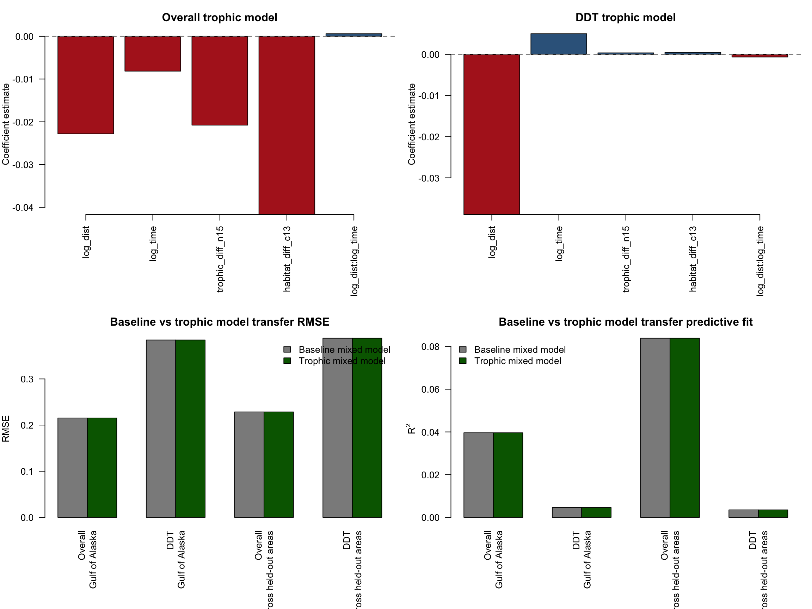
16) Detailed Methods and Hypothesis-Testing Framework
This section formalizes the analytical strategy as a scale-aware hypothesis-testing workflow. The goal is not only to estimate distance-decay, but to test whether observed patterns exceed what would be expected under ecologically informed null structure.
16A. Core inferential setup
The analysis is built around pairwise comparisons among samples. For each pair, we quantify:
- geographic separation (km),
- contaminant similarity (DDT family; PCP/PCB family),
- isotope similarity (delta13C and delta15N structure), and
- multivariate overall similarity.
This pairwise framing makes scale explicit because each observation is a contrast across space (and later time), not a single-site value.
16B. Hypotheses and matched tests
The workflow tests the following hypotheses.
H1: Spatial decay exists for each response. Test: fit exponential, power-law, and log-linear distance-decay functions to each response and evaluate slope direction, fit quality, and AIC support.
H2: Observed decay is stronger than expected under structured randomness. Test: permutation null models comparing observed log-distance slopes to null slope distributions (p_lower and p_upper). This is the principal significance test for distance structure.
H3: Decay form differs by contaminant class. Test: compare functional-form rankings and parameter values among DDT-family, PCP/PCB-family, isotope, and overall similarity responses.
H4: Distance-decay is not species-invariant. Test: species-level model fits and slope summaries, followed by cross-species synthesis table of best models and decay strength.
H5: Time contributes independent structure beyond distance. Test: spatiotemporal scaling models including distance, temporal lag, and distance-by-time interaction terms.
H6: Hierarchical dependence matters for inference and prediction. Test: dyadic mixed-effects models with crossed random effects for individuals, species, and areas, preventing pseudoreplication from pairwise data reuse.
H7: Biodiversity-relevant trophic structure improves transferability. Test: extension of dyadic mixed models with trophic and habitat isotope covariates, compared against baseline models under blocked transfer tests.
16C. Null models as a central inferential engine
Null models are not a side diagnostic in this workflow; they are the backbone of hypothesis testing for spatial structure.
- In the synthetic demonstration, randomization establishes the baseline slope distribution expected when spatial signal is absent.
- In real data, spatially constrained permutations preserve broad area and species composition while breaking fine-scale pairwise alignment, producing a conservative counterfactual for H2.
This design answers the key inferential question directly: is the observed decay stronger than expected given the sampling structure and broad ecological grouping?
16D. Scale as the design principle
Scale is explicitly embedded in each stage:
- Fine-to-broad spatial scale: pairwise distances from local to basin-wide extents, with flexible functional forms to detect curvature and attenuation behavior.
- Temporal scale: year and pairwise lag terms test whether spatial decay is stable or shifts with time separation.
- Biological scale: species-level and trophic structure test whether ecological organization changes decay strength or model transfer performance.
- Prediction scale: leave-one-area-out blocking evaluates extrapolation to truly new spatial domains rather than interpolative fit alone.
Together, these choices convert scale from a descriptive backdrop into an explicit driver of model architecture and hypothesis tests.
16E. Why this multi-method sequence is necessary
No single model can answer all questions in contamination biogeography. The sequence used here is deliberate:
- identify form and strength of decay,
- validate against null expectations,
- evaluate heterogeneity among species and chemistry classes,
- incorporate temporal coupling,
- model hierarchical dependence, and
- test ecological covariates for spatial transfer.
This sequence balances mechanistic interpretation and predictive robustness, while keeping inference anchored to explicit null expectations and scale-aware validation.
16F. How trophic level enters the models
Trophic structure is entered through isotope-derived covariates in the dyadic trophic model:
trophic_diff_n15 = |delta15N_i - delta15N_j|, a proxy for trophic-level mismatch,habitat_diff_c13 = |delta13C_i - delta13C_j|, a proxy for habitat/foraging mismatch,mean_trophic_n15, the pair-average trophic position proxy,mean_habitat_c13, the pair-average habitat baseline proxy.
Interpretation on the similarity scale is direct: negative coefficients for mismatch terms indicate that isotopically dissimilar pairs are less similar in contaminants after accounting for distance, time lag, and hierarchical random effects.
Important caution: these are ecological proxies, not direct causal measurements of trophic level or habitat identity. delta15N and delta13C each include baseline spatial variation, source mixing, and tissue-integration effects; therefore, coefficients should be interpreted as associational signals unless baseline correction and discrimination-factor uncertainty are modeled explicitly.
16G. Integrative graphics: how distance, time, species, and trophic effects enter
if (!exists("fit_objs") || length(fit_objs) == 0) {
plot.new(); title("Integrative model-entry graphics unavailable (baseline model objects missing)")
} else {
par(mfrow = c(2, 2), mar = c(8, 4, 3, 1))
# Panel A: baseline fixed effects (distance, time, interaction)
base_terms <- c("log_dist", "log_time", "log_dist:log_time")
lab_map <- c(log_dist = "Distance", log_time = "Time lag", `log_dist:log_time` = "Distance x Time")
for (nm in names(fit_objs)) {
cf <- as.data.frame(summary(fit_objs[[nm]]$model)$coefficients)
cf$term <- rownames(cf)
cf <- cf[cf$term %in% base_terms, , drop = FALSE]
if (nrow(cf) == 0) { plot.new(); title(paste(nm, "baseline fixed effects unavailable")); next }
xpos <- seq_len(nrow(cf))
ylim_r <- range(c(cf$Estimate - 1.96 * cf$`Std. Error`, cf$Estimate + 1.96 * cf$`Std. Error`, 0), na.rm = TRUE)
plot(xpos, cf$Estimate,
ylim = ylim_r,
xlim = c(0.5, nrow(cf) + 0.5),
xaxt = "n",
xlab = "",
ylab = "Coefficient estimate",
main = paste(c(sim_overall = "Overall", sim_DDT = "DDT")[nm], "baseline fixed effects"),
pch = 19,
col = if (nm == "sim_overall") "darkorchid4" else "firebrick")
axis(1, at = xpos, labels = lab_map[cf$term], las = 2)
abline(h = 0, lty = 2, col = "grey50")
segments(xpos, cf$Estimate - 1.96 * cf$`Std. Error`,
xpos, cf$Estimate + 1.96 * cf$`Std. Error`,
lwd = 2,
col = if (nm == "sim_overall") "darkorchid4" else "firebrick")
}
# Panel C: species and area random-effect SDs (shows hierarchical entry)
first_nm <- names(fit_objs)[1]
vc <- as.data.frame(VarCorr(fit_objs[[first_nm]]$model))
vc <- vc[vc$grp %in% c("species_i", "species_j", "area_i", "area_j", "id_i", "id_j"), c("grp", "sdcor")]
if (nrow(vc) > 0) {
ord <- order(vc$sdcor, decreasing = TRUE)
barplot(vc$sdcor[ord],
names.arg = vc$grp[ord],
las = 2,
col = "grey45",
ylab = "Random-effect SD",
main = "Hierarchical variance entry (example response)")
} else {
plot.new(); title("Random-effect SDs unavailable")
}
# Panel D: trophic covariate fixed effects if trophic models exist
if (exists("trophic_objs") && length(trophic_objs) > 0) {
tnm <- names(trophic_objs)[1]
tcf <- as.data.frame(summary(trophic_objs[[tnm]]$model)$coefficients)
tcf$term <- rownames(tcf)
keep <- c("trophic_diff_n15", "habitat_diff_c13", "mean_trophic_n15", "mean_habitat_c13")
tcf <- tcf[tcf$term %in% keep, , drop = FALSE]
tlab <- c(
trophic_diff_n15 = "Trophic mismatch (delta15N)",
habitat_diff_c13 = "Habitat mismatch (delta13C)",
mean_trophic_n15 = "Pair mean trophic proxy",
mean_habitat_c13 = "Pair mean habitat proxy"
)
if (nrow(tcf) > 0) {
xpos <- seq_len(nrow(tcf))
ylim_r <- range(c(tcf$Estimate - 1.96 * tcf$`Std. Error`, tcf$Estimate + 1.96 * tcf$`Std. Error`, 0), na.rm = TRUE)
plot(xpos, tcf$Estimate,
ylim = ylim_r,
xlim = c(0.5, nrow(tcf) + 0.5),
xaxt = "n",
xlab = "",
ylab = "Coefficient estimate",
main = "Ecology entry via trophic proxies",
pch = 19,
col = "darkgreen")
axis(1, at = xpos, labels = tlab[tcf$term], las = 2)
abline(h = 0, lty = 2, col = "grey50")
segments(xpos, tcf$Estimate - 1.96 * tcf$`Std. Error`,
xpos, tcf$Estimate + 1.96 * tcf$`Std. Error`,
lwd = 2,
col = "darkgreen")
} else {
plot.new(); title("Trophic fixed effects unavailable")
}
} else {
plot.new(); title("Trophic model objects unavailable")
}
}
The figure above is designed to answer exactly how each driver enters:
- distance and time enter as fixed effects (
log_dist,log_time) plus interaction, - species/area/individual repeated structure enters as random effects,
- ecology enters via trophic/habitat isotope proxy covariates.
These panels are best interpreted as an entry map of model terms and uncertainty, complemented by the dedicated performance plots in Sections 15B and 15C.
16H. Dyadic mixed models explained for undergraduates
A dyadic mixed model is a model for data where each row describes a
pair (a dyad), not a single sample. Here, each row
compares sample i and sample j.
Why this matters: the same sample appears in many different pairs, so pairwise rows are not independent. If we ignore that, we can get overconfident p-values and unstable effects.
The model solves this by combining:
- fixed effects (distance, time, trophic covariates): average relationships we want to estimate, and
- random effects (id_i/id_j, species_i/species_j, area_i/area_j): adjustments that absorb repeated-measure structure and group-level dependence.
In plain language: fixed effects tell us the average rule; random
effects acknowledge that each bird/species/area has its own baseline
around that rule. Because each pair has two members, modeling both
i and j keeps the analysis symmetric; if this
is ignored, repeated use of the same samples can make effects look more
certain than they really are.
16I. Method citations
Methods used here follow established references for mixed models, smooth spatial models, information-theoretic model comparison, and null/permutation logic. For mixed models, interpretation here prioritizes effect sizes, uncertainty, and blocked cross-validation performance; where p-values are used, denominator-df approximations depend on method choices.
16J. References for methods
- Bates D, Machler M, Bolker B, Walker S. 2015. Fitting linear mixed-effects models using lme4. Journal of Statistical Software 67(1):1-48.
- Wood SN. 2017. Generalized Additive Models: An Introduction with R (2nd ed.). Chapman and Hall/CRC.
- Burnham KP, Anderson DR. 2002. Model Selection and Multimodel Inference: A Practical Information-Theoretic Approach (2nd ed.). Springer.
- Manly BFJ. 2006. Randomization, Bootstrap and Monte Carlo Methods in Biology (3rd ed.). Chapman and Hall/CRC.
- Gotelli NJ, Graves GR. 1996. Null Models in Ecology. Smithsonian Institution Press.
- Legendre P, Fortin MJ, Borcard D. 2015. Should the Mantel test be used in spatial analysis? Methods in Ecology and Evolution 6:1239-1247. (Context for spatial dependence cautions and alternatives.)
- Roberts DR, Bahn V, Ciuti S, et al. 2017. Cross-validation strategies for data with temporal, spatial, hierarchical, or phylogenetic structure. Ecography 40:913-929.
- Post DM. 2002. Using stable isotopes to estimate trophic position: models, methods, and assumptions. Ecology 83:703-718.
- Fry B. 2006. Stable Isotope Ecology. Springer.
- McMahon KW, McCarthy MD. 2016. Embracing variability in trophic discrimination factors facilitates calculation of ecologically meaningful trophic positions. Oecologia 181:991-1003.
- Newsome SD, del Rio CM, Bearhop S, Phillips DL. 2007. A niche for isotopic ecology. Frontiers in Ecology and the Environment 5:429-436.
- Kenny DA, Kashy DA, Cook WL. 2006. Dyadic Data Analysis. Guilford Press.
17) Conclusion: Main Drivers of Contamination Variation
Across contaminants and isotopes, the dominant source of variation is space: chemical similarity decreases with increasing geographic distance, and this spatial decay is strongest for DDT-family chemistry and strongest overall in the multivariate index.
The second driver is contaminant class and transport behavior:
- DDT-family patterns are steep and typically best described by exponential decay, consistent with spatially localized or regionally concentrated sources plus distance attenuation.
- PCP/PCB patterns are shallower, consistent with broader transport and mixing.
- Isotopes show smoother, more gradient-like structure (often better log-linear support), indicating broad foraging/habitat transitions rather than sharply bounded sources.
The third driver is time and space-time coupling:
- Temporal lags contribute additional variation, but usually less than distance.
- The joint space-time model indicates that distance-decay strength can shift with temporal separation (interaction term), meaning spatial structure is not fully time-stationary.
The fourth driver is species/ecology context:
- Species-level fits show different slope magnitudes and best functional forms, implying trophic ecology and movement behavior modulate exposure patterns.
- In this dataset, high-pair species (especially Uria spp.) dominate signal strength, so future inference should balance species representation.
Synthesis of hypothesis support
The strongest empirical support is for H1 and H2: spatial decay is consistently negative, and null-model comparisons indicate that observed decay exceeds structured random expectation. H3 is also supported: DDT-family responses show steeper and often more exponential behavior than PCP/PCB-family and isotope structure. H4 and H6 are supported by species-level heterogeneity and dyadic mixed-model performance under blocked transfer. H5 and H7 are supported but context-dependent: temporal terms and trophic covariates add information, especially in difficult transfer settings, but gains vary by response and held-out region. These trophic gains should be interpreted as improved ecological transfer signals, not stand-alone proof of trophic causation.
Practical take-away for predictive modeling
For prediction, prioritize a spatiotemporal model where contamination is modeled as a function of distance structure, year (or lag), and species effects simultaneously (for example, GAM or mixed-effects spatial model with spatial cross-validation by area). This workflow is best aligned with the evidence in this report: space is the strongest axis, time is informative, and species modifies both.
If a single concise ranking is needed for this report, it is:
- Geographic distance (spatial structure)
- Contaminant chemistry class (DDT vs PCB/PCP vs isotope behavior)
- Time (collection year / pairwise lag)
- Species ecological differences
18) Graphics Gallery
This appendix pulls together all graphics generated by the workflow so they can be reviewed in one place, including the original distance-decay plots and the new spatiotemporal and biodiversity-augmented mixed-model figures.
Dummy distance decay panels
[1] “outputs/figures/plotting-1.png” attr(,“class”) [1] “knit_image_paths” “knit_asis”
Generality across response types
[1] “outputs/figures/generality-1.png” attr(,“class”) [1] “knit_image_paths” “knit_asis”
Real data distance decay fits
[1] “outputs/real_testcase_distance_decay_plots.png” attr(,“class”) [1] “knit_image_paths” “knit_asis”
Binned mean similarity with 95% CI
[1] “outputs/figures/real-binned-ci-1.png” attr(,“class”) [1] “knit_image_paths” “knit_asis”
Observed versus null slope distributions
[1] “outputs/figures/real-null-slopes-1.png” attr(,“class”) [1] “knit_image_paths” “knit_asis”
Observed versus null decay bands
[1] “outputs/figures/real-null-decay-bands-1.png” attr(,“class”) [1] “knit_image_paths” “knit_asis”
Functional form comparison
[1] “outputs/figures/fitted-curves-plot-1.png” attr(,“class”) [1] “knit_image_paths” “knit_asis”
GAM spatial prediction
[1] “outputs/figures/gam-spatial-1.png” attr(,“class”) [1] “knit_image_paths” “knit_asis”
Temporal trends
[1] “outputs/figures/temporal-trend-1.png” attr(,“class”) [1] “knit_image_paths” “knit_asis”
Distance decay by time lag tercile
[1] “outputs/figures/spatiotemporal-visualization-1.png” attr(,“class”) [1] “knit_image_paths” “knit_asis”
Dyadic mixed model diagnostics
[1] “outputs/figures/dyadic-mixed-graphics-1.png” attr(,“class”) [1] “knit_image_paths” “knit_asis”
Trophic mixed model diagnostics
[1] “outputs/figures/dyadic-trophic-graphics-1.png” attr(,“class”) [1] “knit_image_paths” “knit_asis”
species breakdown
[1] “outputs/figures/species-breakdown-1.png” attr(,“class”) [1] “knit_image_paths” “knit_asis”
Species breakdown 2
[1] “outputs/figures/species-breakdown-2.png” attr(,“class”) [1] “knit_image_paths” “knit_asis”
Species breakdown 3
[1] “outputs/figures/species-breakdown-3.png” attr(,“class”) [1] “knit_image_paths” “knit_asis”
Species breakdown 4
[1] “outputs/figures/species-breakdown-4.png” attr(,“class”) [1] “knit_image_paths” “knit_asis”
Species breakdown 5
[1] “outputs/figures/species-breakdown-5.png” attr(,“class”) [1] “knit_image_paths” “knit_asis”
Species breakdown 6
[1] “outputs/figures/species-breakdown-6.png” attr(,“class”) [1] “knit_image_paths” “knit_asis”
Species breakdown 7
[1] “outputs/figures/species-breakdown-7.png” attr(,“class”) [1] “knit_image_paths” “knit_asis”
Species breakdown 8
[1] “outputs/figures/species-breakdown-8.png” attr(,“class”) [1] “knit_image_paths” “knit_asis”